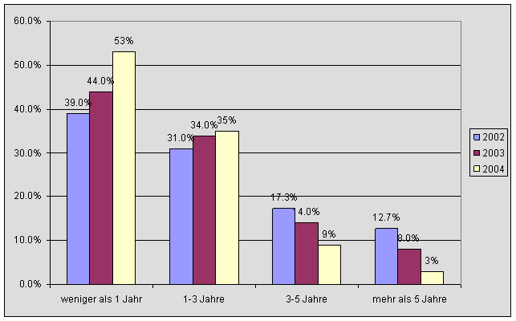
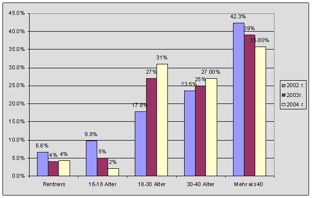
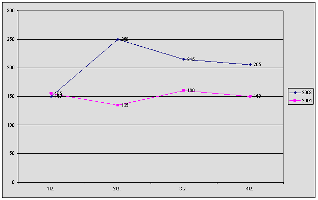
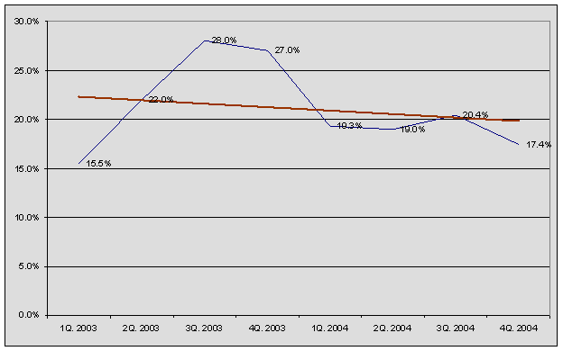
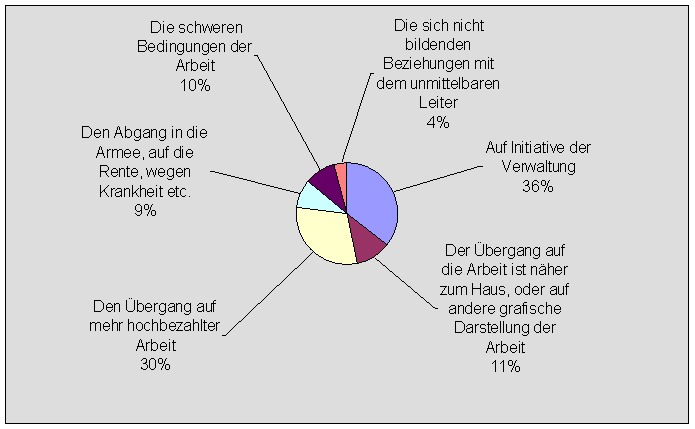
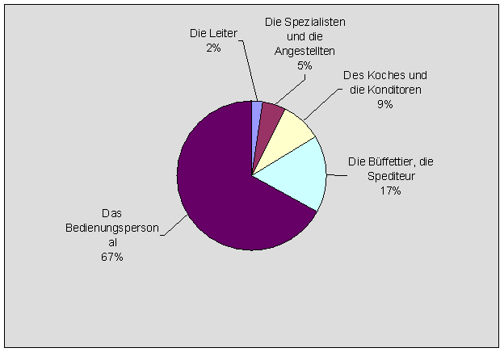
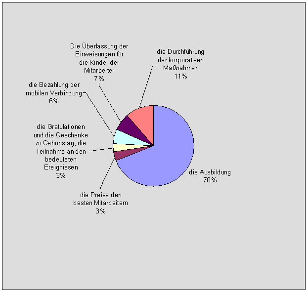

Masterarbeit
Thema: Eine ökonomische Analyse interner Arbeitsmarkte
Vorgelegt
von Ott, Alexey
Student im 9 Jahrgang des Deutschen MBA-Programms Moskau
der Fakultät für Wirtschaftswissenschaft
an der Otto-von-Guericke-Universitat Magdeburg
Matrikelnummer: 170440
Zur Erlangung des wissenschaftliches Grades „Master of Business Administration“
Wissenschaftlicher Betreuer: PD Dr. Thomas Bürkle
Moskau, den 22.07.2005
Inhaltsverzeichnis
2 Interner Arbeitsmarkt: die theoretischen Grundlagen
2.1 Was ist interner Arbeitsmarkt?
2.1.1 Die Hauptmerkmale der interner Arbeitsmarkt
2.1.2 Die Vorteile des interner Arbeitsmarktes für das Unternehmen
2.2 Die Maßnahmen nach der Entwicklung des interner Arbeitsmarkt
2.2.1 Die Erarbeitung der Kompetenzen für den Stellen
2.2.2 Die Einschätzung der Personalstätigkeit
2.2.4 Die Motivation der Mitarbeiter
3 Interner Arbeitsmarkt der „OMS“ Gesellschaft
3.2 Die existierenden Maßnahmen für Formierung des internen Arbeitsmarktes
3.2.1 Die Stammreserve der Gesellschaft „OMS“
3.2.3 Die Motivation des Personals
3.2.4 Einschätzung des Personals der Gesellschaft „OMS“
3.3 Ökonomische Aspekten des internen Arbeitsmarkt am „OMS“
3.4 Verbesserung des internen Arbeitsmarktes am „OMS“
3.4.1 Die Erarbeitung des Kompetenzsystems für allen Stellen
3.4.2 Die Einführung der Technologie der Einschätzung mit „Assessment Center“
3.4.3 Die Entwicklung des Personals mit Hilfe des Firmenintern Ausbildungszentrum
3.4.4 Die Erarbeitung des Grading-System
Anhang A. Das Formular für Einschätzung des Managerskompetenzen
Abbildungsverzeichnis
Abb. 1: Das Dienstalter der Arbeit des Personals
Abb. 2: Die Älterscharakteristiken des Personals
Abb. 3. Die Dynamik der Entlassungen
Abb. 4: Arbeiterfluktuation der Personal
Abb. 5: Die Gründe der Entlassung der Mitarbeiter
Abb. 6: Die Struktur des entlassenen Personals
Abb. 7: Die Kosten auf die indirekte materielle Stimulierung
Tabellenverzeichnis
Tabelle 1: Die quantitative Charakteristik des Personals
Tabelle 3: Das mittlere Alter nach der Gesellschaft (auf 01.07. 2004).
Tabelle 4: Die Struktur des entlassenen Personals (für den Januar - der Juni 2004)
Tabelle 5: Die Gründe der Entlassung der Mitarbeiter
Tabelle 6: die Formen der Stimulierung und das Motivieren des Personals in 2004-ì dem Jahr
Tabelle 7: Die Kosten auf die indirekte materielle Stimulierung
1 Einführung
Im Lauf seiner Entwicklung, wird jedes Unternehmen mit der Notwendigkeit der Heranziehung der Fachkräfte auf die geschaffenen und befreiten Arbeitsplätze zusammenstoßen. Oft, für die Auffüllung der neuen Arbeitsplätze erstellen die Suche der Mitarbeiter auf äußerlich (in Bezug auf das Unternehmen) die Arbeitsmärkte. Aber ist genügend oft, man kann die Mitarbeiter für die neuen Arbeitsplätze, innerhalb des Unternehmens finden. Es erlaubt, die Zeit für das Bekanntmachen der Mitarbeiter in die Sachen zu verringern, und außer dem, erlaubt, die Entwicklung der Mitarbeiter des Unternehmens und ihrer Karrieregröße zu gewährleisten.
Die Heranziehung des existierenden Personals auf die neuen Stellen, die Personalentwicklung, sind alle diesen Handlungen die Bestandteile des interner Arbeitsmarkt der Unternehmen. Die Entwicklung dieses Marktes ist sehr wichtig gegenwärtig, wenn das Wissen des Personals, und nicht die Materialwerte, Kapital sind. Interner Arbeitsmarkt ist ein Gegenstand der Forschung vieler bekannter Spezialisten auf dem Gebiet der Arbeit mit dem Personal.
In der forgelegte Arbeit, als das Beispiel für die Forschung der internen Arbeitsmark wird russische Gesellschaft „OMS“ verwendet, die seinen Kunden der Dienstleistung der Cleaning und Catering gewährtleisted. Die schnelle Entwicklung der Gesellschaft fordert die Entwicklung des Personals, was erlauben wird, die Qualität der Arbeit des Personals zu verbessern und Arbeiterfluktuation zu verringern.
Die forgelegte Arbeit besteht aus zwei Teilen. In den ersten Teil der gegebenen Arbeit, werden die theoretischen Prinzipien des internen Arbeitsmarktes untersucht. Und in den zweiten Teil, wird der internen Arbeitsmarkt der Gesellschaft „OMS“ untersucht: die existierenden Maßnahmen für Personalentwicklung, und auch die zukünftigen Maßnahmen, die auf die Verbesserung der Arbeit mit dem Personal gerichtet sind.
2 Interner Arbeitsmarkt: die theoretischen Grundlagen
2.1 Was ist interner Arbeitsmarkt?
Interner Arbeitsmarkt – der Arbeitsmarkt, das auf der Personalbewegung des innerhalb des Unternehmens (oder der Gruppe der Unternehmen) gegründet ist. Die Personalbewegung kann geschehen:
· Horizontale, wenn der Arbeiter auf den neuen Arbeitsplatz geht, der vorher nach den erfüllten Funktionen und dem Charakter der Arbeit ähnlich ist;
· Vertikale – auf die höhere Kategorie oder die Stelle.
Doeringer und Piore bestimmen interner Arbeitsmarkt wie “an administrative unit, such as a manufacturing plant, within which the pricing and allocation of labor is governed by a set of administrative rules and procedures” (Doeringer und Piore, 2-3).
Im Unterschied von den äußerlichen Arbeitsmärkten, werden die Arbeitskräfte nicht aufgrund der Marktmechanismen, und aufgrund der befolgten Regeln und der Dienstordnungen verteilt. Dabei, können die gegebenen Regeln mit verschiedenen Kriterien für die Errichtung der Arbeitsbezahlung und der Annahme der Beschlüsse über die Verteilung der Arbeitskräfte operieren. Sogar das Kriterium der Effektivität kann hier nicht die Hauptrolle spielen.
Man unterscheidt firmenspezifischen Arbeitsmarkte („enterprise market“) vom berufspezifischen Arbeitsmarkte („craft market“). Die für die Berufspezifischen Arbeitsmärkte sind typisch für die handwerklichen Berufe. Diese Art des internen Arbeitsmarktes ist in USA verbreitet, wo die existierende Agenturen, die Arbeiter zwischen verschiedenen Unternehmen verteilen. Dabei, klären sich der Mobilitätsclusters von den vorherbestimmten Bewegungen zwischen verschiedenen Arbeitgebern, aber innerhalb eines und selben Berufes. Solche Märkte sind meistens planmäßig geschützt, so dass auf die nur die Personen mit einer bestimmten Bildung oder die Fertigkeiten geraten können.
Die firmenspezifischen Arbeitsmärkte sind eine klassische Art des Arbeitsmarktes, und viele Forscher meinen gerade diese Art des Arbeitsmarktes.
2.1.1 Die Hauptmerkmale der interner Arbeitsmarkt
Die innere Struktur der Unternehmensarbeitsmarkt hängt von vorwiegenden Regimen der Personalmobilität ab. Meistens wird die so genannte Mobilitätsclusters beschrieben. Doeringer und Piore bezeichnen, dass die Übergänge auf andere Arbeit vorzugsweise zwischen den Arbeitsplätzen geschehen, die zu Mobilitätsclusters gehören. Solche Mobilitätsclusters bestehen aus der Arbeitsplätze, die sich ähnlichen Fertigkeiten aufweisen, haben eine ähnliche Tätigkeit, werden um einige und der selben Arbeitsgebiet gruppiert oder gehören zur selben funktionalen oder planmäßigen Einheit (Doeringer und Piore, 50).
Ein Merkmal des Vorhandenseins des Arbeitsmarktes ist das Vorhandensein so genannte Karrierleiter, sie auch die Prototyp der Mobilitätsclusters sind. Die Arbeitsplätze in solchem Clusters richten sich hierarchisch ein und die Mitarbeiter können in die Stellen sich, vergangene alle Stadien der Karrierleiter oben einnehmen.
Das Definitionskriterium interner Arbeitsmärkte besteht in dem spezifischen Allokationsprozeß, in dem Arbeitnehmer auf bestimmte Arbeitsplätze zugewiesen werden. Interne Arbeitsmärkte zeichnen sich vor allem durch Mobilitätscluster, Karriereleitern usw. Solche Allokationsmechanismen korrespondieren aber mit den Charakteristiken der Arbeitsnachfrage: Arbeitsplätze in internen Arbeitsmärkten sind geschützt, bieten bessere Karrierechancen. Auch für die Struktur des Arbeitsangebots bleiben interne Arbeitsmärkte nicht ohne Folgen: Arbeitnehmer, die den Zugang zu internen Arbeitsmärkten schaffen, müssen ihre Qualifizierung für die aussichtsreichen Jobs der internen Arbeitsmärkte nachweisen, sich motivierer und engagieren zeigen. Arbeitnehmer, die als „unsichere Kandidaten“ gelten und dazu gehören Frauen, Angehöriger ethnischer Minderheiten, Personen mit inferioren Bildungsabschlüssen – werden auf sekundäre Arbeitsmärkte verwiesen.
In firmeninternen Arbeitsmärkten erfolgt die Schließung im Wesentlichen über den Arbeitsvertrag. Der Vertrag verhindert die willkürliche Entlassung des Arbeitnehmers und begründet die indefinite Dauer der Besetzung einer Position. Die Karriereleitern innerhalb von firmeninternen Arbeitsmärkten definieren Vakanzketten. Die Aufstiegsleiter als solche führt ebenfalls zur Schließung von Positionen, da Jobs im Bezug aufeinander definiert werden und damit eine Existenz unabhängig von ihren Inhabern erhalten. „Interdependence among jobs, created by the technical division of labor, implies that the existence of some jobs is necessary for the functioning of other jobs. The corresponding separation of the existence of the job from the jobholder is a necessary though not sufficient condition for the employee to gain control over the job“(Gross, 86-87).
Mit der Schließung der Positionen in den Karriereleitern sind die Voraussetzungen für Ascription und Alimentierung gegeben. Doch die Länge der Karriereleiter ist ein wichtiger Strukturparameter, der das Ausmaß der Mobilität in der Leiter und damit auch den Schließungsgrad der einzelnen Positionen beeinflusst. Je tiefer die Leiter gestaffelt ist, je mehr Positionen sie beinhaltet, desto mehr Vakanzen entstehen in einem gegebenen Zeitintervall. Das Ausmaß der Mobilität ist größer und die Verweildauer in den einzelnen Positionen wird kürzer. Anders ausgedrückt: Je tiefer die Leiter gestaffelt ist, desto geringer ist der Schließungsgrad der einzelnen Positionen innerhalb der Leiter.
Nach Gross „Zusammenfassend lässt sich sagen, dass die Besetzung von Positionen in tiefgestaffelten Karriereleitern nach Achievementkriterien ist wahrscheinlicher als in Systemen mit flachen Vakanzketten, und die Übereinstimmung von Produktivität und Entlohnung ist leichter sicherzustellen als dort. Es können hier Allokations- und Verteilungsprinzipien implementiert werden, wie sie von neoklassischen Arbeitsmarktmodellen angenommen werden. Karriereleitern können die Organisationseffizienz der Produktion sichern, wenn auch mit anderen Mitteln als es das Grenzprodukttheorem annimmt“ (Gross, 87-88).
Je kürzer die Karriereleitern werden, desto stärker fällt die Kontrolle von Qualifikation und Performanz an die Arbeitnehmer. Die längere Verweildauer erschwert die Anpassung des Qualifikationsniveaus der Arbeitnehmer an das Lohnniveau. Der Anreizeffekt sinkt mit der Zahl der Beförderungswellen. Die Unsicherheit der Allokationsentscheidung hinsichtlich der zukünftigen Produktivität der Arbeitnehmer steigt mit der Verweildauer in den einzelnen Positionen. Askriptive Merkmale für die Allokation gewinnen an Bedeutung.
2.1.2 Die Vorteile des interner Arbeitsmarktes für das Unternehmen
Die Formierung des Arbeitsmarktes kann den ernsten Einfluss auf die Unternehmenstätigkeit wirken. Hierher kann man folgende Faktoren beziehen:
· Die Arbeiter, die im Unternehmen arbeiten, erwerben spezifisch für jewaligen die Unternehmen (der Arbeitsplatz, der Abschnitt) an der Erfahrung, was eines des Herangehens der Erhöhung der Arbeitersqualifikation (das ist so genanntes Herangehen „Learning by doing“) ist. Dabei geschieht keine Unterbrechung des Arbeiter von der Produktions;
· Bei der Durchführung der Maßnahmen nach der Formierung des interner Arbeitsmarkt wird die Loyalität der Arbeiter des Unternehmens erhöht;
· Bei dem Abzug der Arbeiter sinken die Kosten auf die Miete und die Ausbildung, die bei dem Satz der neuen Arbeiter entstehen sollten;
· Die Erhöhung der Arbeitseffektivität der Mitarbeiter bei der Durchführung der Maßnahmen nach der Ausbildung und der Motivation;
· Die Durchführung der Attestierungen erlaubt, das Ausscheiden der Mitarbeiter, mit der niedrige Arbeitseffektivität haben;
· Auf Kosten der Mitarbeiterentwicklung, ihrer Einschätzung und der Verschiebung in Unternehmen das Unternehmen kann die Optimierung der Anzahl der Mitarbeiter erstellen;
· Auf Kosten der Optimierung der Mitarbeitersanzahl und der Einführung der Systeme der materiellen Motivation, wie das Grading-System, kann das Unternehmen die Kosten auf die Arbeitsbezahlung reduzieren.
2.2 Die Maßnahmen nach der Entwicklung des interner Arbeitsmarkt
Die Entwicklung des internen Arbeitsmarktes ist mit der Arbeit des existierendens Personals nicht verbunden. Die Formierung des internen Arbeitsmarktes geschieht in mehrere Etappen:
· Bestimmung der Stellefunktionen. Hier werden die Aufgaben nach der Formierung der Arbeitsbeschreibungen, der Lagen über die Gliederungen, der Lagen über die Businessprozesse und der Prozeduren nach diesen Prozessen bezogen;
· Bestimmung der Forderungen zu den Stellen. Hier kann man zuschreiben: die Kompetenzbildung, die Bestimmung des Profils des idealen Kandidaten;
· Die Auslese des Personals. Die Auslese wird laut bestimmt Kompetenz erstellt. Auf der Stufe der Auslese wird Assessment der Kandidaten für die Bestimmung der Übereinstimmung mit dem vermuteten Stellen durchgeführt. Nach der Annahme des Beschlusses über die Beschäftigung der Stellen vom Kandidaten, ihm klärt sich der individuelle Arbeitsplan für die Dauer von der Probezeit;
· Die Einschätzung der Arbeit des Personals während der Probezeit. Nach der Probezeit wird der Kandidat der Zwischenattestierung auf die Übereinstimmung mit den auf der Probezeit gelieferten Aufgaben untergezogen;
· Die Einschätzung des Personals wird, auf der regelmäßigen Grundlage durchgeführt. Im Lauf dieser Einschätzungen, wird die Analyse der Möglichkeiten erstellt, und als Ergebnis der Einschätzung können die Maßnahmen nach der Entwicklung und der Motivation des Personals durchgeführt werden;
· Die Maßnahmen sind nach der Entwicklung des Personals auf die Verbesserung der Produktivität und die Qualität der Arbeit des Personals gerichtet;
· Die Maßnahmen ermöglichen nach der Motivation des Personals, das Personal zwecks der Erhöhung der Arbeitsproduktivität und der Loyalität des Personals anzuregen;
· Die Formierung der Stammreserve, ermöglicht dem Unternehmen, sich, gegründet worden auf das existierende Stammpotential zu entwickeln.
Die gegebenen Etappen, sind am öftesten verwendet auf die Mehrheit der Unternehmen. In der gegebenen Arbeit, werden wir bis ins Einzelne die Maßnahmen durch die Einschätzung, der Entwicklung, der Personalsmotivation untersuchen, und auch nach der Formierung der Stammreserve, da diese Maßnahmen sind mit der Formierung des internen Arbeitsmarkt des Unternehmens am verbunden.
2.2.1 Die Erarbeitung der Kompetenzen für den Stellen
Die Erarbeitung der Kompetenzen für die Stellen ist eine wichtige Etappe der internen Arbeitsmarktesentwicklung (Volodina, 15-20). Die gegebene Etappe erlaubt, die deutlichen Einschätzungskriterien der Mitarbeiter der Unternehmen, wie schon beschäftigt, als auch die auf diesen Stellen vermitteltet werden.
Für jeden Stellen wird ein Profil des Sachkenntnisses und der Fähigkeiten entwickelt, der dann erlaubt, die Tätigkeit der konkreten Mitarbeiter zu bewerten. Entwickelt den Kompetenzbereich zerschlagen auf die Blöcke oft:
· professionellen Kompetenzen;
· planmäßigen Kompetenzen;
· Profilkompetenzen;
· das führende Potential;
· kommunikativen Kompetenzen;
· Kreativitätskompetenzen;
· energetischen Kompetenzbereiches.
Aufgrund der Komptenzblöcke können dann die Fragebögen und die Formulare der Einschätzung der Tätigkeit der Mitarbeiter gebildet werden, die bei der Einschätzung der Tätigkeit des Personals ausgenutzt werden können. Das Beispiel, des Formulars der Kompetenzeinschätzung ist in der Annahg A gebracht.
2.2.2 Die Einschätzung der Personalstätigkeit
Bei der Entwicklung des internen Arbeitsmarktes des Unternehmens, soll man ohne Einschätzung der Tätigkeit des Personals nicht behandeln. Besonders trifft es auf das Schlüsselpersonal zu, ohne das die Tätigkeit des Unternehmens und des Personals unmöglich ist, in Bezug auf den, plant das Unternehmen die Tätigkeit nach seiner Entwicklung. Zurzeit existieren verschiedene Methodiken, die für die Einschätzung der Tätigkeit des Personals vorbestimmt sind. Sie werden nach der Qualität der Einschätzung, der Stufe der Einschätzungsrichtigkeit den Kosten auf die Einschätzung und anderen Parametern unterschieden.
Die Prozeduren der Attestierung kann man in zwei Gruppen aufteilen (Bazarov, 50-53):
· die Arbeitseinschätzung;
· die Personalseinschätzung.
Die Arbeitseinschätzung– die Maßnahmen nach der Bestimmung der Mengeübereinstimmung und die Arbeitsqualität den Technologieforderungen. Die Arbeitseinschätzung vor einrm ein Ziel, den realen Inhalt, die Qualität, die Umfänge und die Arbeitsintensität des Personals mit Vorraussicht gegenüberzustellen. Die voraussichtlichen Charakteristiken des Personals, in der Regel, sind in den Plänen und die Programme, die technologischen Karten, die Arbeiten des Unternehmens vorgestellt. Die Arbeitseinschätzung weiteres zu bewerten:
· die Quantität;
· die Qualität;
· die Arbeitsintensität.
Die Arbeitseinschätzung des ermöglicht, über die nächsten Stammaufgaben zu entscheiden:
· das Potential für das Vordringen und die Senkung des Risikos der Aufstellung der nicht kompetenten Mitarbeiter zu bewerten;
· die Kosten auf die Ausbildung reduzieren;
· bei den Mitarbeitern das Gefühl der Gerechtigkeit zu unterstützen und die werktätige Motivation zu erhöhen;
· die Rückkopplung den Mitarbeitern über die Qualität ihrer Arbeit zu organisieren;
· die Stammprogramme der Ausbildung und der Entwicklung des Personals zu entwickeln.
Die Personaleinschätzung vor eienem ein Ziel, die Bereitschaft des Arbeiters zur Ausführung gerade jener Art der Tätigkeit zu erlernen, mit der er sich lernt, und auch das Niveau seiner potentiellen Möglichkeiten mit dem Ziel der Einschätzung der Perspektiven der Größe (die Rotation), und auch der Erarbeitung der Stammmaßnahmen, die für die Errungenschaft der Ziele der Personalauswahl notwendig sind, zu zeigen.
Es ist nötig, zu beurteilen, dass zur Einschätzung des Personals wie die unmittelbaren Leiter bewertet, als auch andere Vorgesetzten, die Kollegen, die untergeordnet sind, die Spezialisten der Stammdienste, die äußerlichen Konsultanten und, endlich, bewertet (die Selbsteinschätzung) herangezogen werden können. Auf diese Weise, werden die geringeren Kenntnisse mit den Methoden der Einschätzung des Personals aller Arbeiter – die Garantie, dass die verwendeten Methoden den erwarteten Effekt ergeben.
2.2.2.1 Das Hauptherangehen zur Arbeitseinschätzung
Es existiert einige Herangehen zur Personalseinschätzung, unter denen man das nächste Herangehen wählen kann:
· Die Einschätzung des Ergebnisses (zum Beispiel, des erworbenne Gewinn). Die Schwierigkeit ruft die Einschätzung der komplizierten, komplexen Arten der Tätigkeit, die die Menge der Leute berührt, herbei, da das Problem der Einschätzung der Einlage jeden in das Erhalten des Ergebnisses entsteht.
· Die Einschätzung des Verhaltens (nach den Kriterien, die mit der erfüllten Tätigkeit) verbunden sind. Das meiste Problem ist – die Abteilung des realen Verhaltens und allgemein charakterologische der Striche.
· Das Erfolgsrating der (nach der Reihe der Skalen, die behavioral Messungen oder der Messung der Striche) abspiegeln. Die Probleme dieses Herangehens – die Fehler der Schlußfolgerungen und die Verallgemeinerungen, bei der Einschätzung einigen Skalen unbegründet werden auf andere (die Beispiele abgeändert Rating verlegt es sind ausgerichtet auf das Verhalten der Skala, die Skalen der Beobachtung hinter dem Verhalten).
· Die Ordnungsprozeduren, gebend die Möglichkeit die Unterschiede zwischen den nebenan Personen (eine nach der anderen oder der Reihe der Kennziffern) aufzustellen. Doch können bei der Nutzung gerade Rating falsch (subjektiv) die Ergebnisse geben.
Für die Organisation des wirksamen Systems der Einschätzung der Arbeitsproduktivität der Mitarbeiter ist es notwendig:
· die Ausstellung von Pässen der Arbeitsplätze zu leiten;
· die Standards der Arbeitsproduktivität für jeden Arbeitsplatz und das Kriterium ihrer Einschätzung aufzustellen;
· die Politik der Durchführung der Einschätzungen der Arbeitsproduktivität (wenn zu produzieren, wie auch wem oft ist, die Einschätzung) durchzuführen;
· bestimmten Personen zu verpflichten, die Einschätzung der Arbeitsproduktivität zu erstellen;
· für die Pflicht den Personen, die die Einschätzung durchführen, zu halten, die Daten über die Arbeitsproduktivität zu sammeln;
· die Einschätzung mit dem Arbeiter zu besprechen;
· die Einschätzung Beschluss zu fassen und dokumentieren.
2.2.2.2 Die Etappen der Durchführung der Einschätzung des Personals
Die Personalseinschätzung wird in einige Etappen meistens durchgeführt, unter denen die Hauptfolgen sind (Karpova, 41-45):
1. Die Vorbereitung – Erarbeitung der Kriterien, die Prinzipien und Methodiken der Attestierungsdurchführung ;
· die Erarbeitung der Kriterien der Einschätzung des Personals entsprechend dem entwickelten Kompetenzsysteme nach den Stellen;
· die Ausgabe der normativen Dokumente nach der Vorbereitung und der Durchführung der Attestierung;
· die Vorbereitung des speziellen Programms;
· die Vorbereitung der Materialien der Attestierung (die Formulare, die Formen, etc.).
2. Die Durchführung der Attestierung – attestiert und die Leiter ist (nach der Erarbeitung des Stammdienstes selbständig) bereiten die Berichte vor;
· attestiert und nicht nur die Leiter, sondern auch die Mitarbeiter und die Kollegen füllen die Bewertungsformen aus;
· es werden die Ergebnisse analysiert;
· es werden die Sitzungen der Attestationskommission durchgeführt.
3. Das Heranführen der Ergebnisse der Attestierung – die Analyse der Stamminformation, die Einführung und die Organisation der Nutzung der persönlichen Information, und die Vorbereitung der Empfehlung nach der Arbeit mit dem Personal;
- die Zustimmung der Ergebnisse der Attestierung.
4. Die Durchführung der Maßnahmen als Ergebnis der Attestierung.
2.2.2.3 Die Methoden der Einschätzung des Personals
Alle Methoden der Einschätzung kann man auf die Methoden der individuellen Einschätzung der Arbeiter aufteilen, die auf der Forschung der individuellen Qualitäten und die Arbeitsergebnisse des Arbeiters gegründet sind, und die Methoden der Gruppeneinschätzung, die auf dem Vergleich der Effektivität der Arbeiter innerhalb der Gruppe gegründet sind. In den nächsten Abteilungen, werden die konkreten Methoden der Einschätzung bis ins Einzelne untersucht sein.
2.2.2.3.1 Die Attestierung
Unter der Attestierung versteht man die standardisierten Methoden der Einschätzung des Personals oft, die man genügend schnell und ohne große Kosten leiten kann. Hierher kann man die nächsten Methoden der Einschätzung aufzählen (Karpova, 41-45):
· Die Fragebogenmethode. Der Bewertungsfragebogen stellt einen bestimmten Satz der Fragen und der Beschreibungen dar. Bewertend analysiert das Vorhandensein oder die Abwesenheit der erwähnten Striche bei attestiert und bezeichnet die passende Variante.
· Die umschreibende Methode der Einschätzung. Die erstellte Einschätzung soll die positiven und negativen Striche des Verhaltens attestiert zeigen und beschreiben. Diese Methode sieht die deutliche Fixierung der Ergebnisse nicht vor und deshalb wird oft als die Ergänzung zu anderen Methoden verwendet.
· Die Methode der Klassifikation. Diese Methode ist auf Ordnung der attestierten Arbeiter nach einem bestimmten Kriterium vom Besten zu schlimmste mit der Aneignung von ihm einer bestimmten laufenden Nummer gegründet.
· Die Methode des Vergleiches nach den Paaren. In dieser Methode wird in der Gruppe attestiert, die sich am Arbeitsplatz befindet, jeder zu jedem verglichen, wonach die Menge des malles berechnet wird, wenn sich attestiert vom Besten in seinem Paar erwies. Aufgrund der bekommenen Ergebnisse wird nach der allgemeine Nennwert nach der Gruppe gebaut.
· Den Nennwert oder die Methode des Vergleiches. Er ist auf der Einschätzung der Übereinstimmung des Arbeiters der eingenommenen Stellen gegründet. Es ist Ordnungsmethode der persönlichen Qualitäten des Arbeiters. Die wichtigste Komponente der gegebenen Art der Einschätzung – die Aufgabestellung, die soll der attestierte Mitarbeiter erfüllen. Nach der Zusammenstellung dieser Liste (kann er aus der Arbeitsbeschreibung genommen sein) vollbringt das Studium der Tätigkeit unter Berücksichtigung der Zeit, die vom Mitarbeiter auf die Annahme der Beschlüsse verbraucht wird, die Ausführungsweise der gestellten Aufgaben. Wird auch berücksichtigt, wie sparsam der Mitarbeiter ist und wie die materiellen Mittel verwendetwerden. Dann geschieht die Einschätzung der in der Liste aufgezählten Qualitäten des attestierten.
· Die Methode der Fragebögen und der vergleichenden Fragebögen. Nimmt den Satz der Fragen oder der Beschreibungen des Verhaltens des Arbeiters auf. Abschätzer einträgt Notiz gegenüber Beschreibung jenen Striches des Charakters, die, nach seiner Meinung, dem Arbeiter charakteristisch ist, lässt die leere Stelle andernfalls. Die Summe der Vermerke gibt den allgemeinen Nennwert des Fragebogens des jeweiligen Arbeiters. Wird für die Einschätzung von der Führung, den Kollegen und untergeordnet verwendet.
2.2.2.3.2 Die kreisförmige Attestierung
Bei der kreisförmigen Attestierung wird der Mitarbeiter von seinem Leiter, seinen Kollegen und seine untergeordnet bewertet. Die konkreten Einschätzungsformen können abwechseln, aber allen bewertend füllen die identischen Formulare aus und die Bearbeitung der Ergebnisse wird mit Hilfe des Computers erstellt, um die Anonymität zu gewährleisten. Das Ziel der Methode – die allseitige Einschätzung attestiert zu bekommen.
Die kreisförmige Einschätzung kann bei der Einschätzung der Arbeit der Stellen des mittleren leitenden Gliedes ausgenutzt werden. Aber am erfolgreichsten ist es, die bei der Einschätzung des Personals, das für die Stammreserve vorbestimmt ist, verwendet werden, da die komplexe Einschätzung der Arbeit des Mitarbeiters gibt.
2.2.2.3.3 Das Interview
Diese Methodik ist von den Abteilungen nach der Arbeit mit dem Personal aus der Soziologie entlehnt.
Das Beispiel des Planes des Interviews mit dem Ziel der Einschätzung der Persönlichkeit. Im Interview ist es wichtig, die Information über die nächsten Komponenten und die Charakteristiken der Persönlichkeit zu bekommen: intellektuelle Sphäre, Motivationssphäre, Temperament und Charakter, professionelle- und die Lebenserfahrung, Gesundheit, Beziehung zur professionellen Tätigkeit, die Frühjahre, Beziehung zur Arbeit in der Firma, Begeisterungen, Selbsteinschätzung der Möglichkeiten, der Gesundheit, Familienstand, der Beziehung in der Familie, Formen der Durchführung der Freizeit.
2.2.2.3.4 Die Prüfung
Für die Einschätzung des Arbeiters können und verschiedene Prüfungen verwendet sein. Nach seinem Inhalt werden sie auf drei Gruppen geteilt:
· qualifikations, zulassend die Stufe der Qualifikation des Arbeiters zu bestimmen;
· psychologisch, gebend die Möglichkeit der Personlichkeitscharakteristik des Arbeiters zu bewerten;
· physiologisch, zeigend physiologisch der Besonderheit des Menschen.
Die positiven Seiten der Prüfungseinschätzung liegt darin, das es erlaubt, die quantitative Charakteristik nach der Mehrheit der Einschätzungskriterien zu bekommen, und es ist möglich die Ergebnisse bearbeiten. Doch, berücksichtigen bewertend die potentiellen Möglichkeiten des Arbeiters, die Prüfungen nicht, wie diese Fähigkeiten in der Praxis gezeigt werden.
2.2.2.3.5 Die Wettbewerbe
Die Durchführung des Wettbewerbes (zum Beispiel, auf den Grad des besten Arbeiters der Gliederung) ist eine wirksame Methode der Einschätzung und der Stimulierung des Personals. Besonders diese Methode ist bei der Einschätzung des niedrigsten Personals wirksam, da die minimalen Kosten auf die Einschätzung fordert, und schafft den Konkurrenzen Umgebung unter den Arbeitern der Gliederung, was zur Erhöhung der Produktivität bringt.
2.2.2.3.6 Das „Assessment Center”
Die Einschätzung des Personals ist nach der Methode des „Assessment Center „am meisten verschwenderisch, aber in diese Zeit, einer der sichersten Methoden. Mit Hilfe dieser Methode werden zwei Aufgaben entschieden:
· es werden die persönlichen und geschäftlichen Qualitäten des Arbeiters aufgeklärt, (meistens diese Methode wird für die Einschätzung der Hauptmitarbeiter) verwendet;
· es klärt sich das Programm der individuellen Trainings des Leiters, der zu entwickeln seine Fähigkeit zulässt, die behavioral Fertigkeiten.
Vor der Durchführung der Einschätzung nach der gegebenen Methode, muss man den Kompetenzbereich, der für jeden der Mitarbeiter gefordert ist, genau bestimmen. Der Kompetenzbereich ist ein Satz der behavioral Charakteristiken, die dem Mitarbeiter für die erfolgreiche Ausführung jener oder anderen Arbeit notwendig sind.
Die Teste, die bei der Arbeit nach der gegebenen Methode verwendet sind, nehmen unterschiedliche Zeit in Anspruch. Zum Beispiel, für die Einschätzung des Professionalismus des Meisters genügend einige Stunden, für den Manager des nicht hohen Niveaus - ein Tag, für die Manager des mittleren Gliedes – 2-3 Tage, kaum mehr für die Leiter und der Verwalter des höchsten Gliedes. Da einige der für die Einschätzung verwendeten Prozeduren:
· Die Ausführung der Verwaltungshandlungen. Für die auf der Ausführung abgeführten Aufgaben zwei Stunden Testperson soll in einige Instruktionen, den geschäftlichen Papieren, den Befehlen und andere Materialien, die für die Rückerstattung der Verfügungen nach konkret technologisch notwendig sind, den Produktions-, Stammfragen eingeführt werden. So wird die reale Tätigkeit der Firma nachgebildet. Nach dem Abschluss der Zweiuhrarbeit über der Aufgabe mit bewertet wird das Interview durchgeführt.
· Die Erörterung der Probleme in der kleinen Gruppe. Diese Prozedur zeigt, ob man die Fähigkeit besitzt zusammen in der Gruppe zu arbeiten. Den Mitgliedern der Gruppe wird das Material gegeben, der eingeführt werden muss, selbständig in der aufgegebenen Frage und während der Gruppenerörterung (40-50 Minuten Beschluss fassen) übrig von seiner Richtigkeit zu überzeugen. In allen aufgezählten Etappen die Testperson wird von dem Beobachter in den Graden bewertet.
· Die Annahme der Beschlüsse. Testpersonen werden in kleinere Gruppen verteilt (die Vertreter der konkurrierenden Firmen). Es wird die Arbeit der Firmen während einiger Jahre (2-5ëåò) modeliert. Jede Stunde wird als ein Jahr angenommen, im Laufe von dem die Reihe der Aufgaben entschieden wird. Die Tätigkeit jeder Testperson werden von den Experten bewertet.
· Die Erarbeitung und die Vorstellung des Projektes. Man muss das Projekt des Planes der Entwicklung irgendwelchen der Art der Tätigkeit in 1 Stunde entwickeln, die sich vor den Experten später verteidigt.
· Die Vorbereitung des geschäftlichen Briefes. Jeder Testperson bereitet die geschäftlichen Briefe mit verschiedenen Fragen und von verschiedenen Positionen vor: die Absage, die Aufhebung des Beschlusses, die Äußerung der negativen Information usw. Die Handlungen bewerten die Experten.
Manchmal wird auch der Vergleich der Ergebnisse der Experteneinschätzung des Arbeiters mit seiner Selbsteinschätzung seiner persönlichen und geschäftlichen Qualitäten gebraucht. Die Ergebnisse solchen Vergleiches können sehr vorbildlich wie für die Führung, als auch für den Arbeiter sein.
Die besonders gegebene Methode der Einschätzung ist für die Einschätzung des höchsten leitenden Personals wirksam.
2.2.2.3.7 Die Schlüsselkennziffern der Tätigkeit (KPI)
Bei der Nutzung der Methode der Schlüsselkennziffern der Tätigkeit, der Leiter und untergeordnet bestimmen die Schlüsselziele der Tätigkeit des Arbeiters auf einen bestimmten Termin (ein Jahr – halbes Jahr) zusammen. Die Ziele sollen konkret, erreichbar sein, aber gespannt sein, die Bedeutung, wie für die professionelle Entwicklung des Arbeiters, als auch für die Vervollkommnung der Tätigkeit der Organisation haben. Die aufgestellten Ziele umfassen die Sphäre der Verantwortung des Arbeiters und der Kreis seiner Pflichten auf jene konkreten Termine, die für die erreichen des geplanten Ergebnisses notwendig sind. Diese Ergebnisse sollen messbar sein. Die Einschätzung der Ergebnisse wird zusammen vom Leiter und den Arbeiter aufgrund der individuellen Standards der Realisierung der Ziele erstellt, doch der Leiterverfügt über die entscheidende Stimme bei dem Heranführen der Ergebnisse.
Aus den Schlüsselkennziffern der Tätigkeit bilden sich die Schlüsselkennziffern der Tätigkeit der Gliederungen der Gesellschaft, und dann – die Gesellschaft.
2.2.2.3.8 Die Einschätzung aufgrund der Modelle der Kompetenz
Die Modelle der Kompetenz beschreiben die intellektuellen und geschäftlichen Qualitäten des Arbeiters, seine Fertigkeiten der zwischenmenschlichen Kommunikation, die für die erfolgreiche professionelle Tätigkeit im Rahmen der korporativen in der Organisation existierenden Kultur notwendig ist. Der Bruch zwischen dem notwendigen und existierenden Niveau der Kompetenz wird Grund für die Erarbeitung der individuellen Pläne der professionellen Entwicklung sein. Die Ausführung dieser Pläne, den endeckten Ausdruck in den konkreten Ergebnissen der professionellen Tätigkeit, ist ein Gegenstand der Einschätzung und der Selbsteinschätzung, und auch der unabhängigen Expertise. Die Einschätzung wird nach der gegebenen Methode aufgrund der entwickelten Kompetenzsysteme nach den Stellen verwendet. Das Beispiel, des Formulars der Einschätzung der Kompetenzen ist in der Anhang A gebracht.
2.2.2.3.9 Die geschäftlichen Spiele
Die Einschätzung des Personals verwirklicht sich im Rahmen der speziell entwickelten Imitations- und entwickelnden geschäftlichen Spiele. Zur Einschätzung werden wie die Teilnehmer der geschäftlichen Spiele, als auch die Experten-Beobachter herangezogen. Beurteilung die geschäftlichen Spiele werden, in der Regel, auf das Ergebnis durchgeführt, was erlaubt, die Bereitschaft des Personals zum Beschluss der aktuellen und zukünftigen Aufgaben, und auch die individuelle Einlage jedes Teilnehmers des Spieles zu bewerten. Diese Methode der Einschätzung kann für die Bestimmung der Effektivität der Kommandoarbeit des Personals ausgenutzt werden.
2.2.3 Die Personalentwicklung
Die Personalentwicklung ist motivationsbildend für das Personal. Außer dem, erlauben die Maßnahmen nach der Personalentwicklung, die Effektivität der Arbeit des Personals zu erhöhen (Ganihina, 16-21; Ljahovich, 33-37; Henzte, 315-319).
2.2.3.1 Die professionelle Ausbildung
Die professionelle Ausbildung bringt den Nutzen, wie den Mitarbeitern des Unternehmens, als auch dem Unternehmen. Auf Kosten der Ausbildung, wird die Effektivität und die Qualität der Arbeit der Mitarbeiter der Gesellschaft erhöht. Und Mitarbeiter, bekommen die Möglichkeit des Erwerbs des neuen Wissens, was ihre Selbsteinschätzung erhöht und dient zum motivierenden Faktor wird.
Unterscheiden die äußerliche und innere Ausbildung des Personals. Die innere Ausbildung des Personals erlaubt, die in der Gesellschaft existierende Erfahrung den neuen Mitarbeitern zu weitergeben. Und zur äußerlichen Ausbildung wenden sich für jene Fälle, wenn es in die Gesellschaft keine entsprechende Erfahrung gibt, ist es oder der Bescheinigung der Mitarbeiter von den äußerlichen Organisationen erforderlich (Ganihina, 16-21).
2.2.3.2 Coaching
Coaching – eine der Abarten der Ausbildung, die hauptsächlich wie das System der Schulmeisterhaftigkeit realisierbar wird. Man unterscheidet zwieschen externe und interne Coaching. Coaching stellt die Kombination der Methoden der Sendung des Wissens sowohl sowohl auch die Erfahrunf der Schulmeisterhaftigkeit dar, was erlaubt, den Prozess der Beherrschung vom neuen Wissen zu überwachen.
Meistens wird externe Coaching für die Übermittlung des Kenntnisses und der Entwicklung der Fertigkeiten verwendet, über die die Mitarbeiter der Gesellschaft nicht verfügen, und oft wird bei Diversifikation des Business, der Beseitigung der regelmäßig entstehenden Probleme, der Optimierung des Business und der Vorbereitung der Trainers für die Development Zentrums verwendet.
Interne Coaching wird für die Sendung des Wissens und der Fähigkeiten von den Mitarbeitern der Unternehmen den neuen Mitarbeitern, bei der Vorbereitung der Stammreserve und dgl. m verwendet. Oft diese Art der Tätigkeit wird wie der Teil der Arbeit des Firmeninternen Zentrums der Ausbildung verwirklicht werden
2.2.3.3 Das Firmeninternen Zentrum der Ausbildung (Development Center)
Oft erschaffen die Unternehmen die Firmeninternen Zentren für Personalentwicklung. Dabei kann der eigene Staat der Lehrer gebildet werden. Sie entwickeln und führen hauptsächluch die Kurse nach dem Studium der Besonderheit des Produktes der Gesellschaft, nach der zu ihm verwendbaren Technologie der Verkäufe, und auch so genannt der Adaptationsbeschäftigung für die neuen Mitarbeiter, die zur wirksameren Aneignung der Businessprozesse und der Kultur der Gesellschaft beitragen, durch. Am Lehrprozess nehmen auch die Leiter der Gliederungenteil, wobei sie in die Rolle der „Lehrer“, als auch in die Rolle der „Schüler“ auftretten. Solche Ausbildung kann zusammen mit Trainings Unternehmens, den Business – Schulen und die abgesondert eingeladenen Lehrer und die Spezialisten in bestimmten Wissensgebieten geschehen (Ljahovich, 33-37).
Durch die System-stetige Mehrebenenausbildung firmeninternen gewährleistet das Zentrum:
- Die Formierung der einheitlichen Werte und der Standards des geschäftlichen Verkehres für alle Mitarbeiter, d.h. die Entwicklung der modernen korporativen Kultur;
- Die Einführung der einheitlichen Technologien der Verwaltung der Businessprozesse (die Verkäufe, die Führungen der Leute, der Bedienung der Kunden) auf allen Niveaus der Organisation und ihre regelmäßige Erneuerung;
- Das Aufbauen der ständig geltenden inneren Kommunikationen für die Sendung und die Erklärung der Verwaltungsbeschlüsse (von oben – nach unten), des Erhaltens der Rückkopplung von denen, wer diese Beschlüsse in Leben umsetzen (von unten nach oben), in Ordnung bringen der wirksamen Wechselwirkung zwischen den abgesonderten Gliederungen (nach der Horizontale), einschließlich für übertragen der Ideologie und der Technologie auf alle Niveaus der Gesellschaft;
- Die Formierung bei den Mitarbeitern der modernen Businessfertigkeiten, vor allem behavioral und kommunikativ.
Entscheidend diese Aufgaben, firmeninterne gewährleistet das Ausbildungszentrum die langfristige Konkurrenzfähigkeit des Unternehmens. Die Erhöhung der Effektivität seiner Tätigkeit und der Bereitschaft zu den ständigen Veränderungen, deren Notwendigkeit von der modernen Marktstellung diktiert wird, ist heute eine Grundlage der Businessstrategie der erfolgreichen Gesellschaft.
Die Konzeption des firmeninternen Ausbildungszentrums hat die Reihe der prinzipiellen Momente:
· Ganze Lehrtätigkeit des Zentrums ist auf die Realisierung der Strategie der Gesellschaft und der Beschluss der aktuellen Aufgaben der Entwicklung des Business gerichtet. Das System der Ausbildung ist Mechanismus, mit Hilfe dessen die ständige Erneuerung der für die Errungenschaft notwendigen Businessziels des Wissens und der Fertigkeiten, und auch in Ordnung bringen der regelmäßigen senkrechten und horizontalen Kommunikation in den Schlüsselfragen der Arbeit der Organisation geschieht.
· Das Ausbildungszentrum erfasst verschiedene Formen der Ausbildung (die Seminare, das Businesstraining, Coaching, der Beschäftigung von den Fremdsprachen, die Aneignung der IT-technologien), vereinigt von der einheitlichen Konzeption und verwaltet aus dem Zentrum.
· Firmeninternes Ausbildungszentrum ist ein System der stetigen und regelmäßigen Ausbildung für die Mitarbeiter aller Niveaus (von den Spezialisten bis zu den Leitern des höchsten Niveaus) aufgrund der einheitlichen Lehrpläne.
Die Bestimmung des Programms der Ausbildung fängt mit der sorgfältigen Analyse der Bedürfnisse der Organisation ausgehend von den Zielen ihrer abgesonderten Gliederungen und des Business insgesamt an.
Die Organisation der Maßnahmen für des firmeninternen Ausbildungszentrums wird unter der Kontrolle der Hochmanager durchgeführt und wird auf die Zahl der Prioritäten in ihrer Tätigkeit, bezogen. Die Ausbildung wird eineder wichtigste Richtung. Gerade ist es ein wesentlicher Faktor des Erfolges der Tätigkeit des Ausbildungzetrums der Gesellschaft.
Die Tätigkeit des Ausbildungszentrums erlaubt, die Ausbildung nicht auf den abstrakten Beispielen aufzubauen, und sondern nach den konkreten Situationen, die in die Gesellschaft entstehen. Ihre Modellierung auf den Beschäftigungen trägt zum Beschluss der realen Probleme und der aktuellen Aufgaben des Business in die gedrängten Termine bei, die Mitarbeiter bekommen dafür entsprechend Instrumentarium. Solches Herangehen erhöht ihre innere Motivation zum Erwerb des neuen Wissens und der Aneignung der Fertigkeiten. Tatsächlich ist es eine Verkörperung des Prinzips „die Ausbildung auf dem Arbeitsplatz“.
2.2.4 Die Motivation der Mitarbeiter
Die Motivation ist – der Prozess der Stimulierung sich und anderer auf die Tätigkeit, die auf die Errungenschaft der individuellen und allgemeinen Ziele der Organisation gerichtet ist. In der Praxis wählen die materielle und nicht materielle Motivation der Mitarbeiter (Harvard business essentials, 57-89; Jost, 522-529; Zhurnaev, 25-29). Für die Gesellschaft, werden die meisten Ergebnisse die kombinierten Systeme der Motivation, die für die konkreten Mitarbeiter angepasst werden, geben. Kein Steuersystem wird gut sein, um zu funktionieren, wenn das wirksame Modell der Motivation, nicht entwickelt sein wird.
Das System der Motivation hängt stark vom Stadium der Entwicklung der Gesellschaft stark ab, und das entwickelte Motivationssystem soll den aktuellen Zustand der Gesellschaft berücksichtigen, und seine Arbeit auf den entsprechenden Maßnahmen betonen.
Das Motivationssystem soll sein:
· ist einfach und ist von allem klar;
· ist und eindeutig;
· maximal objektiv, um die Ergebnisse der Tätigkeit und die Qualifikation zu berücksichtigen.
Nur wird bei der Beachtung dieser Regeln bei dem Personal der Gesellschaft die standfeste Meinung gebildet, dass jeder Mitarbeiter die Möglichkeit hat, (in einzelnen Fällen sogar selbständig zu überwachen) die Ergebnisse der Tätigkeit zu zählen.
2.2.4.1 Die materielle Motivation
2.2.4.1.1 Die Schlüsselkennziffern der Tätigkeit (KPI)
Die Schlüsselkennziffern der Tätigkeit werden nicht nur bei der Einschätzung der Tätigkeit des Personals verwendet, sondern auch können wie die Methode des materiellen Werkes der Mitarbeiter ausgenutzt werden, da der Mitarbeiter die Abhängigkeit zwischen dem Niveau der Bezahlung und die Ausführung bestimmten Aufgaben augenscheinlich sieht.
2.2.4.1.2 Das Grading-System
Das Grading-System erlaubt das Personal je nach der Komplexität der erfüllten Arbeit ordnen. Laut diesem System hat jede Stelle mehrere Grades, sich unterscheidend untereinander vom Umfang des Gehaltes und verschiedenes Niveau der Ausführung von einer und derselben Funktion (nach verschiedenen Kennziffern). Entsprechend, bekommt jeder Mitarbeiter die Möglichkeit, auf mehr hoch bezahlter Klasse, auf Kosten der Erhöhung der Kennziffern seines Arbeits übergeht. Das Ziel des gegebenen Systems ist – die Motivation des Personals auf die wirksamere Arbeit. Die Grundlagen des Grading-System waren von der Gesellschaft Hay Group in der Mitte 50 des 20. Jahrhundertes formuliert.
Die Einleitung des einheitlichen des Personalordnungssystems erlaubt:
· Die adäquaten Kompensationspakete für alle Stellen zu formieren.
· Die adäquaten sozialen Pakete für verschiedene Klasse (die Bezahlung mobiler Tel., die Bezahlung der Reisekosten, das dienstliche Auto, die Einladung auf die korporativen Feiertage, die Bezahlung der Durchfahrt auf die Arbeit u.a.m.) zu planen
· Die Planung und die Kontrolle andere (außer dem Gehalt) der Kosten auf das Personal (die Kosten auf die Auslese, die Ausbildung u.a.m.) zu optimieren
· Deutlich die Vollmächte und der Verantwortung nach den Niveaus der Verwaltung und den Stellen zu verteilen.
· Die inneren Rotationen des Personals (horizontal und senkrecht) zu planen.
· Die Regeln, die Standards und die Prozeduren für verschiedene Grades zu formieren.
· Die korporative Kultur des Unternehmens, das auf dem Prinzip der Produktionsgerechtigkeit gegründet ist, zu entwickeln.
Die Arbeiten, die auf jedem der Positionen erfüllt werden, werden aufgrund drei Hauptgruppen der Faktoren bewertet, das Wesentliche gilt:
- Das Wissen und die Erfahrung, die für die Arbeit notwendig ist. Hier kann man drei Hauptelemente wählen: die praktischen Prozeduren, die speziellen Methoden und die Annahmen, das professionelle Wissen; das Verwaltungs-Know-how (die Fertigkeiten der Planung, die Organisationen, die Ausführungen, die Verwaltungen und die Einschätzungen); die Fertigkeiten auf dem Gebiet der Kommunikationen (die Fähigkeit, mit den Leuten zu arbeiten, mit ihnen den Kontakt einzustellen und ihre Tätigkeit) zu verwalten;
- Die Fertigkeiten, die für den Beschluss der Probleme notwendig sind. Nimmt zwei Hauptelemente auf: die Fähigkeiten zum analytischen Denken; die Fähigkeiten zum Schaffen;
- Das Niveau der Verantwortung. Nimmt auf: die Grenzen, in die kann der Arbeiter auf der gegebenen Position die selbständigen Beschlüsse übernehmen; insgesamt die Grenzen seiner Tätigkeit; das Niveau der Einwirkung auf die Arbeit der Gesellschaft.
Nach jedem der Faktoren von den Experten wird geschlossen, das in der tabellarischen Art mit Hilfe der Zahlen oder der Prozentbedeutungen dargestellt wird. Je nach der bekommenen Einschätzung werden die Stellenpositionen in bestimmt Grade (die Kategorie) aufgenommen, der das Erhalten eines bestimmten Gehaltes oder des sozialen Paketes garantiert.
Das Grading-System wird in mehrern Etappen entwickelt:
1. Die Bestimmung des Modells und der Faktoren der Einschätzung der Stellen;
2. Die Wahl der Stellen für die Analyse;
3. Die Analyse der Arbeit, als Ergebnis dessen werden gebildet:
· die Beschreibung der Arbeit (die Stelle und des Arbeiters der Stellen);
· die Arbeitsbeschreibung;
· die Persönlichkeitsspezifikation.
4. Die Einschätzung der Stellen und die Formierung der Struktur (die Hierarchie) der Stellen.
2.2.4.1.3 Die Teilnahme am Gewinn der Gesellschaft
Die Erarbeitung der Politik die Teilnahme des Personals (ist ein höchstes und mittleres leitendes Personal) in den Gewinn der Gesellschaft, und auch die übrigen Arten der Teilnahme in der Verwaltung der Gesellschaft hauptsächlich.
2.2.4.2 Die nicht materielle Motivation
2.2.4.2.1 Die soziale Motivation
Wächst die Rolle der sozialen Ermäßigungen und der Auszahlungen wie die Teile des vereinten Einkommens der Arbeiter wächst in die letzten Jahre merklich. Die Spezialisten bezeichnen, dass die Ermäßigungen und die Auszahlungen aufgehört haben, den zeitweiligen, zusätzlichen Charakter zu tragen. Sie wurden in die Lebensnotwendigkeit nicht nur Arbeiter, sondern auch ihrer Familien umgewandelt. Das Spektrum der Ermäßigungen, die den Arbeitern gewährt sind, ist ziemlich breit: die bezahlten Feiertage und Urlaube, die bezahlten Tage der zeitweiligen Arbeitsunfähigkeit, die bezahlte Zeit der Unterbrechung auf die Erholung, die bezahlte Zeit auf das Mittagessen, die medizinische Versicherung auf dem Unternehmen, die zusätzliche Rentenversicherung auf dem Unternehmen, die Unfallversicherung, die Versicherung nach der langwierigen Arbeitsunfähigkeit, die Überlassung der kostenlosen Haltestellen für die Autos, die Versicherung der Touristen von den Unfällen, die Hilfe in der Erhöhung der Bildung, der Berufsausbildung und der Umschulung, die Überlassung in die Benutzung der Arbeiter der Objekte der Erholung und der Unterhaltungen, die Überlassung der Hilfe in der Überfahrt auf den neuen Arbeitsplatz.
Die Ermäßigungen und die Auszahlungen des sozialen Planes figurieren unmittelbar in den Lohnlisten nicht, aber wesentlich beeinflusst das Niveau der Einkommen der Arbeiter. Dienen nicht nur zum sozialen Schutz arbeitenden, sondern auch erlauben den Firmen, die qualifizierten Arbeiter heranzuziehen und zu festigen, tragen zur Entwicklung des Geistes der Loyalität zur Firma bei.
2.2.4.2.2 Die nicht traditionellen Weisen der Motivation
Zum Mittel der Motivation kann nicht nur das Geld dienen. Hier passt aller, was zur Festigung bei dem Menschen des Gefühles der Selbstachtung beiträgt.
Bestimmten Ergebnisse kann die Nutzung der bestimmte Strategie sein – wenn die Gemeinsamkeit des Schicksals des Unternehmens und der Arbeiter wird in die allgemeine Philosophie der Firma gelegt und verwirklicht sich in allen Aspekten der Tätigkeit des Unternehmens und den Arbeiten mit dem Personal. Es können, insbesondere sein: den Produktionsausstoß der hochwertigen Produktion mit der Akzentuierung des Warenzeichens, der Verkauf den Mitarbeitern der Waren des Unternehmens mit dem Rabatt, die wirksame Unterstützung der Vorschläge und verschiedener Arten der Aktivität des Personals. Man kann es, vor allem, bei jene Unternehmen und in jene Produktionen wirksam ausnutzen, wo die Frauen vorwiegen sind, und auch in den Betrieben mit der reichen Geschichte, wo es gelang, für die Krisenjahre den bedeutenden Teil der Stammarbeiter aufzusparen.
Zur sehr wichtigen Bedingung Erfolg der solcher Strategie der Stimulierung dient die Offenheit und Vertraulichkeit in den Beziehungen zwischen der Führung und die Arbeiter: die ständige und genaue Information letzt über die produktionsökonomische Situation, die sich auf dem Unternehmen bildet, über die Veränderungen in den entsprechenden Marktzonen, über die erwarteten Perspektiven, die geplanten Handlungen, Erfolg der ihrer Realisierung.
2.2.5 Die Stammreserve
Die Formierung der Stammreserve ist eine der Komponenten der Entwicklung des UnternehmensArbeitsmarktes.
Die Stammreserve ist eine Gruppe der Leiter und die Spezialisten, die über die Fähigkeit zur Verwaltungstätigkeit verfügen, antwortend den Forderungen, die von der Stelle jenen oder anderen Ranges vorgelegt sind, zum Reserve wählen und die vergangene systematische zweckbestimmte Qualifikationsvorbereitung (Bazarov, 145-160). Die Arbeit mit der Stammreserve, wie auch andere Technologien der Stammarbeit, ist komplex und hängt von vielen Faktoren ab.
2.2.5.1 Die Typen der Stammreserve
Man kann einige Typen der Stammreserve unterscheidet (dem Anschein nach der Tätigkeit, der Geschwindigkeit der Ersetzung der Stellen, dem Niveau Bereitschaft usw. wählen.). Je nach den Zielen der Stammarbeit kann man entweder eine, oder andere Typen ausnutzen.
1. Dem Anschein nach der Tätigkeit.
· Die Entwicklungsreserve – die Gruppe der Spezialisten und die Leiter, die zur Arbeit im Rahmen der neuen Richtungen (bei Diversifikation der Produktionen vorbereitet werden, der Erarbeitung der neuen Waren und der Technologien). Sie können eine zwei Richtungen der Karriere – die professionelle oder führende Karriere wählen.
· Die Reserve des Funktionierens – die Gruppe der Spezialisten und der Leiter, die das wirksame Funktionieren der Organisation in Zukunft gewährleisten sollen. Diese Mitarbeiter sind auf die führende Karriere ausgerichtet.
2. Nach der Zeit der Bestimmung:
· die Gruppe A – die Kandidaten, die auf die übergeordneten Stellen zum gegenwärtigen Tag vorgebracht sein können;
· die Gruppe B – die Kandidaten, deren Aufstellung wird in die nächsten 1-3 Jahre geplant.
2.2.5.2 Die Prinzipien der Formierung und die Quellen der Stammreserve
Das Prinzip der Aktualität der Reserve – soll das Bedürfnis nach der Ersetzung der Stellen reale sein.
Das Prinzip der Übereinstimmung des Kandidaten der Stellen und dem Typ der Reserve – die Forderungen zur Qualifikation des Kandidaten bei der Arbeit in einem bestimmten Stelle.
Das Prinzip der Perspektivität des Kandidaten – die Orientierung auf die professionelle Größe, der Forderung zur Bildung, den Alterszensus, das Dienstalter der Arbeit in die Stelle und die Dynamik der Karriere insgesamt, den Zustand der Gesundheit.
Bei der Auswahl der Kandidaten in die Reserve für die konkreten Stellen muss man nicht nur die allgemeinen Forderungen berücksichtigen, sondern auch die professionellen Forderungen, die soll der Leiter jener oder anderen Abteilung, des Dienstes, der Abteilung, des Sphäre und verantworten, und auch der Besonderheit der Forderungen zur Persönlichkeit des Kandidaten, die auf der Analyse der Situation in der Gliederung gegründet sind, den Typ der planmäßigen Kultur usw.
Die Quellen der Reserve der Fachkräfte auf die führenden Stellen können werden:
· die leitenden Angestellten des Apparates, der Tochteraktiengesellschaften und der Unternehmen;
· die Haupt- und führenden Spezialisten;
· die Spezialisten, die die entsprechende Bildung und und sich positiv bewerten hanen;
· die jungen Spezialisten, das erfolgreich vergangene Praktikum.
Das erste Niveau der Stammreserve der Fachkräfte – alle Spezialisten des Unternehmens, das nächste Niveau – die Stellvertreter der Leiter verschiedenen Ranges. Die Hauptreserve bilden die Leiter verschiedener Ränge zusammen.
2.2.5.3 Die Arbeitsstufe mit der Stammreserve
Die Arbeit mit der Stammreserve wird in etwas Etappen zerschlagen, jeden von denen seine Rolle erfüllen.
2.2.5.3.1 Die Analyse des Bedürfnisses in der Stammreserve
Die Prozeduren der Formierung der Reserve Bevor zu beginnen, es ist nötig:
· die Veränderung der Apparatesstruktur prognostizieren;
· das Vordringen der Arbeiter nach dem Dienst zu vervollkommnen;
· die Stufe der Sicherstellung von der Reserve der Nomenklaturstellen zu bestimmen;
· die Stufe des Sättigungsgrads der Reserve nach jeder Stelle oder der Gruppe der identischen Stellen (wie viel Kandidaturen aus der Reserve zu bestimmen es muss auf jeder Stelle oder ihre Gruppe).
Daraufhin wird vom Möglichen das aktuelle und perspektivische Bedürfnis nach der Reserve bestimmen. Für die Bestimmung der optimalen Anzahl der Reserve der Fachkräfte muss man aufstellen:
· das Bedürfnis des Unternehmens nach den Fachkräften der Verwaltung auf die nächste oder mehr langwierige Perspektive (bis zu fünf Jahren);
· die tatsächliche Anzahl der in den gegebenen Moment vorbereiteten Reserve jedes Niveaus unabhängig von dem, wo die Vorbereitung der Arbeiter ging, der in die Reserve aufgenommen ist;
· das musterhafte Prozent des Abganges aus der Reserve der Fachkräfte der abgesonderten Arbeiter, zum Beispiel wegen der Nichterfüllung des individuellen Programms der Vorbereitung in Zusammenhang mit der Abfahrt in anderen Bezirk etc.;
· die Zahl der freisetzt der leitenden Angestellten als Ergebnis der Veränderung der Struktur der Verwaltung, die für die führende Tätigkeit auf anderem Abschnitt verwendet sein können.
Diese Fragen werden bis zu der Formierung der Stammreserve entschieden und werden im Laufe von ganzer Periode der Arbeit mit ihm korrigiert.
Für die weitere Vervollkommnung der Arbeit nach der Formierung der Reserve bei der Zusammenstellung der Listen der Reserve muss man die nächsten wichtigsten Momente berücksichtigen:
· die Kategorien der Stellen, die sind stützpunkt- für die Bildung der Reserve des Leiters der konkreten Gliederung, die Differenzierung der Reserve je nach den Besonderheiten der Produktion;
· die Möglichkeit der Auslese der Stellvertreter der Gruppe der Leiter. Ein dabei bestimmender Faktor soll die Meinung über ihre Perspektivität für die weitere Größe nach der dienstlichen Treppe nach allen bewerteten Qualitäten sein;
· die persönliche Verantwortung der Leiter für die rationale Aufstellung einer bestimmten Kategorie der Fachkräfte. Zum Beispiel, soll für die Aufstellung der Meister und der Vorgesetzten der Abschnitte in der Abteilung der Vorgesetzte der Abteilung, für die Aufstellung der Vorgesetzten der Abteilungen – der Leiter des Unternehmens, für die Aufstellung der Stellvertreter der Vorgesetzten der Abteilungen und der Gliederungen des Unternehmens – der Stellvertreter des Leiters des Unternehmens nach den Fachkräften antworten.
2.2.5.3.2 Die Formierung und die Zusammenstellung der Liste der Reserve
Die gegebene Etappe schließt ein:
· die Formierung der Liste der Kandidaten in die Reserve;
· die Bildung der Reserve auf die konkreten Stellen.
Im Laufe der Formierung der Reserve ist es nötig, zu bestimmen:
· wen ist es möglich und wann muss man in die Listen der Kandidaten in die Reserve aufnehmen;
· wer aus den in den Listen aufgenommenen Kandidaten für die Reserve soll in die Ausbildung gehen;
· welche Form der Vorbereitung zu jedem Kandidaten unter Berücksichtigung seiner individuellen Besonderheiten und der Perspektiven der Nutzung auf dem führenden Stelle zu verwenden.
Für die Formierung der Liste der Reserve werden die nächsten Methoden verwendet:
· die Analyse der dokumentarisch Daten – die Berichte, das Lebenslauf, der Charakteristiken, der Ergebnisse der Attestierung der Arbeiter und anderer Dokumente;
· das Interview (das Gespräch) nach dem speziell gebildeten Plan oder der Frageliste oder ohne bestimmten Plan für die Entdeckung der interessierenden Nachrichten (die Streben, der Bedürfnisse, der Motive des Verhaltens und ò. Den Punkt);
· die Beobachtung das Verhalten des Arbeiters in verschiedenen Situationen (in der Produktion, im Alltag usw.);
· die Einschätzung der Ergebnisse der werktätigen Tätigkeit – die Arbeitsproduktivität, der Qualität der erfüllten Arbeit, etc. Der Punkt, der Kennziffern der Ausführung der Aufgaben von der Gliederung im Laufe, der ist für die Einschätzung der Tätigkeit des Leiters am meisten charakteristisch;
· die Methode der aufgegebenen Gruppierung der Arbeiter – werden die Qualitäten der Bewerber zu den Forderungen der Stellen jenen oder anderen Ranges verglichen: unter die aufgegebenen Forderungen zur Stelle wird der Kandidat ausgewählt oder unter die aufgegebene Struktur der Arbeitsgruppe werden die konkreten Leute ausgewählt.
Die Methode vermutet die Formierung drei Arten der informativen Massive der Daten für alle Nomenklatur der führenden Stellen, der Daten und Kriterien der Qualitäten der Spezialisten.
Bei der Formierung der Listen der Kandidaten in die Reserve werden solche Faktoren, folgende berücksichtigt:
· die Forderungen zur Stelle, die Beschreibung und die Einschätzung des Arbeitsplatzes, die Einschätzung der Arbeitsproduktivität;
· die professionelle Charakteristik des Spezialisten, der für die erfolgreiche Arbeit im entsprechenden Stelle notwendig ist;
· das Verzeichnis der Stellen, einnehmend die Arbeiter kann Kandidat auf das reservierte Stelle werden;
· die Höchstbeschränkungen der Kriterien (die Bildung, das Alter, das Dienstalter der Arbeit und dgl.) der Auslese der Kandidaten auf die entsprechenden Stellen;
· die Ergebnisse der Einschätzung der formalen Forderungen und der individuellen Besonderheiten der Kandidaten auf das reservierte Stelle;
· die Schlussfolgerungen und die Empfehlungen der letzten Attestierung;
· die Meinung der Leiter und der Spezialisten der Nebengliederungen, des Ratschlages des werktätigen Kollektives;
· die Ergebnisse der Einschätzung des Potentials des Kandidaten (das mögliche Niveau der Führung, die Fähigkeit zur Ausbildung, die Fähigkeit schnell die Theorie und die praktischen Fertigkeiten) umzusetzen.
Die am meisten wichtigen Faktoren und die Kriterien, die der Inventur bei der Formierung des Systems der Qualitäten des Leiters im reservierten Stellen unterliegen, sind:
· die Arneitsmotivation – das Interesse für die professionellen Probleme und dem schöpferischen Werk, das Streben zur Erweiterung des Gesichtskreises, die Orientierung auf die Perspektive, den Erfolg und die Errungenschaft, die Bereitschaft zu den sozialen Konflikten in den Interessen der Arbeiter und den Sachen, zum begründeten Risiko;
· den Professionalismus und die Kompetenz – die Ausbildungs- und Alterszensus, das Dienstalter der Arbeit, das Niveau professionell Bereitschaft, die Selbstständigkeit in der Annahme der Beschlüsse und die Fähigkeit sind, die Fähigkeit zu verwirklichen, zu verhandeln, seine Position zu beweisen, sie zu halten etc.;
· Personalcharakteristiken und die potentiellen Möglichkeiten – die hohe Stufe der Intelligenz, die Aufmerksamkeit, die Elastizität, die Zugänglichkeit, die Autorität, die Feinfühligkeit, die Umgänglichkeit, der organisatorische Neigung, die neuro-psychische und emotionale Immunität, die motorischen Charakteristiken usw.
Auf das Stadium der Formierung der Reserveliste werden solche Aufgaben, wie folgende entschieden:
· die Einschätzung der Kandidaten;
· die Gegenüberstellung der Gesamtheit der Qualitäten des Kandidaten und jene Forderungen, die für das reservierte Stelle notwendig sind;
· den Vergleich der Kandidaten auf eine Stelle und die Wahl mehr entsprechend für die Arbeit in der reservierten Stelle.
Als Ergebnis der Einschätzung und des Vergleiches der Kandidaten wird präzisiert und es wird die vorläufige Liste der Reserve korrigiert.
2.2.5.3.3 Die Planung der Karrierleiter der Mitarbeiter
Die Organisation ist für die Verwaltung der Karriere (das Strafgesetzbuch) seinen Personals und, hauptsächlich, der Manager interessiert. Wenn für den Menschen die Karriere eine Entwicklung und das Vordringen im planmäßigen Raum ist, so ist vom Gesichtspunkt der Organisation, vor allem, die Frage der Auffüllung, der Ganzheit dieses Raumes, was für seine professionelle und amtliche Komponente, das heißt der planmäßigen Struktur besonders wichtig ist. In solchem Verständnis der Karriere hat die sachkundig gebaute Verwaltung vom Karriereprozess die wichtige Bedeutung für das Funktionieren und der Entwicklung der Organisation, seiend den Faktor der Erhöhung der Effektivität ihrer Tätigkeit, der Bedingung ihrer Immunität und der Existenzfähigkeit des Unternehmens auf den sich ändernden Mittwoch, der von der Kraft bewegt, dem Mechanismus seiner Entwicklung (Shalashilina, 53-58).
Die Verwaltung der Karriere berührt solche wichtigen Probleme, wie Zufriedenheit des Personals von der Arbeit in die Organisation und die mit ihm verbundene Arbeitsproduktivität; die Nachfolge der professionellen Erfahrung und die Kultur der Korporation; die Versorgung der ununterbrochenen und rationalen Ersetzung der Hauptstellen; das Anpassungsvermögen und die Handlichkeit unter den Bedingungen der schnellen Veränderungen im Inhalt und die Arbeitszeilung, unter den Bedingungen der Krisen; endlich, es ist verbunden mit Fragen des inneren Zuwachses des professionellen Potentials und äußerlich Größe des Unternehmens im Kreis.
2.2.5.4 Die Vorbereitung der Kandidaten
Für die Formierung der Reserve, in der Regel, ist ungenügend es, die zum Vordringen fähigen Mitarbeiter – abzunehmen es ist wichtig, sie zur Stelle richtig zu vorbereiten und das Vordringen zu organisieren.
Für die Berufsausbildung können die nächsten Methoden verwendet sein:
· die individuelle Vorbereitung unter Leitung des übergeordneten Leiters;
· das Praktikum in die Stelle auf seinem und anderen Unternehmen;
· das Studium im Institut und in den Kursen je nach dem voraussichtlichen Stellen.
Für die Vorbereitung der Reserve werden entwickelt und es werden von der Verwaltung drei Arten der Programme behauptet.
Das allgemeine Programm nimmt die theoretische Vorbereitung – die Erneuerung und die Ergänzung des Wissens in den abgesonderten Fragen der Wissenschaft und der Praxis der Verwaltung der Produktion auf; die Erhöhung der Bildung der Kandidaten, die in die Reserve aufgenommen sind, verbunden mit ihrer vorig (stützpunkt-) der Vorbereitung; die Ausbildung den speziellen Disziplinen, die für die Erhöhung der Effektivität der Verwaltung von der Produktion notwendig sind. Die Form der Kontrolle – die Aufgabe der Prüfung (die Anrechnungen).
Das spezielle Programm sieht die Teilung ganzer Reserve nach den Fachgebieten vor. Die Vorbereitung, die die Theorie und die Praxis kombiniert, verwirklicht sich nach den folgenden Richtungen: die geschäftlichen Spiele nach allgemeintechnischen und den speziellen Problemen; den Beschluss der konkreten Produktionsaufgaben über die Fachgebiete. Die Form der Kontrolle – die Erarbeitung der konkreten Empfehlungen nach der Verbesserung der Produktion und ihr Schutz.
Das individuelle Programm nimmt die konkreten Aufgaben nach der Erhöhung des Niveaus des Wissens, der Fertigkeiten und der Fähigkeiten für jeden Spezialisten, der in die Reserve aufgenommen ist, nach den folgenden Richtungen auf: die Produktionspraxis auf den führenden einheimischen und ausländischen Unternehmen, das Praktikum auf das Reservestelle.
Die individuellen Pläne der Kandidaten werden von den unmittelbaren Vorgesetzten der Gliederungen entwickelt und werden von den Leitern des Unternehmens behauptet. Die systematische Kontrolle der Ausführung der individuellen Pläne verwirklicht sich von den Leitern der Gliederungen und die Arbeiter des Dienstes der Verwaltung des Personals, das für die Vorbereitung der Reserve verantwortlich ist.
2.2.5.4.1 Die Typen und die Etappen der Karriere
Man kann etwas prinzipieller Bahnen der Bewegung des Menschen im Rahmen des Berufes oder der Organisation wählen, die zu verschiedenen Typen der Karriere bringen werden.
Die professionelle Karriere – die Größe des Wissens, der Fähigkeiten, der Fertigkeiten. Die professionelle Karriere kann durch die Spezialisierung (die Vertiefung in einer, gewählt in den Anfang des professionellen Weges, der Linie der Bewegung) oder Arbeit in verschiedenen Branchen (die Beherrschung von anderen Gebieten der menschlichen Erfahrung, die verbunden ist, schneller, mit der Erweiterung der Instrumentarium und der Tätigkeitsbereiche) gehen.
Firmeninterne Karriere – mit der Bahnen der Bewegung des Menschen in die Organisation verbunden. Sie kann gehen durch:
· der senkrechten Karriere – die amtliche Entwicklung;
· der horizontalen Karriere – das Vordringen innerhalb der Organisation, zum Beispiel die Arbeiten in verschiedenen Gliederungen eines Niveaus der Hierarchie;
· der zentripetalen Karriere – das Vordringen zum Kern der Organisation, dem Verwaltungszentrum, den immer mehr tiefen Einschluss in die Prozesse der Annahme der Beschlüsse.
Treffend mit dem neuen Mitarbeiter, soll der Manager nach dem Personal die Etappe der Karriere berücksichtigen, die er in den gegebenen Moment geht. Es kann helfen, die Ziele der professionellen Tätigkeit, die Stufe der Dynamik und das Wesentliche – die Besonderheit der individuellen Motivation zu präzisieren.
3 Interner Arbeitsmarkt der „OMS“ Gesellschaft
Gesellschaft „OMS“ arbeitet auf dem Markt der korporativen Dienstleistungen schon 10 Jahre. Die Gesellschaft ist einer der größten Lieferanten der Waren für das Büro und ist Führer auf dem Gebiet der Technologien der materiell-technischen Versorgung der Bürotätigkeit. Vor einigen Jahren, begann die Gesellschaft, die neuen Richtungen der Tätigkeit – Cleaning und Catering zu entwickeln. Für diese Jahre, wurde Gesellschaft „OMS“ einer der größten Spieler auf dem Markt der gegebenen Dienstleistungen, und setzt fort, seine Tätigkeit zu entwickeln. Zurzeit bedient die Cleaning Gliederung mehr 100 großer Kunden.
3.1 Den aktuellen Zustand Gesellschaft „OMS“ sowohl die Perspektive der Entwicklung der Gesellschaft als auch den Zweig
Zum gegenwärtigen Tag entwickelt sich der Markt der Dienstleistungen der Cleaning und Catering in Russland sehr aktiv. Die schnelle Entwicklung der Gesellschaften, die auf dem gegebenen Markt (einschließlich Gesellschaft „OMS“) arbeiten fordert die Heranziehung der neuen Arbeiter für die Arbeit in den von neuem geöffneten und ausgedehnten alten Gliederungen. Dabei ist die Besonderheit des Marktes dies, dass die Bildung der neuen Gliederungen, die der Unternehmen bildet, aber arbeitend auf die Objekte des Kunden oft gefordert wird. Das alles fordert die Heranziehung, wie der einfachen Arbeiter, als auch des leitenden Personals, das mit der Besonderheit der Arbeit auf dem gegebenen Markt bekannt ist. Der gegebene Zweig verfügt über viele eigentümliche Besonderheiten, zum Beispiel, die hohe Arbeiterfluktuation des Personals, besonders unter dem niedrigsten Personal.
Zum gegenwärtigen Tag arbeitet in Gesellschaft „OMS“ neben 1500 Mitarbeitern. Von ihnen wird der große Teil auf das Produktionspersonal bezogen, und auf das nicht-produktive Personal werden nur 160 Menschen bezogen. Das Produktionspersonal der Gesellschaft bedient etwas Dutzende der Objekte. Gesellschaft „OMS“ besteht aus den nächsten Gliederungen:
· Die Direktion;
· Die Cleaning Abteilung;
· Die Catering Abteilung;
· Die Abteilung der materiell-technischen Bedienung;
· Das Departement der regionalen Entwicklung;
· Das Departement der Businessentwicklung;
· Der Dienst des Personals;
· Der Dienst der Qualität;
· Das IT-Departement.
Die numerischen Charakteristiken des Personals der Gesellschaft kann man auf den Abb. 1 und Abb. 2, und auch auf Tabelle 1-Tabelle 3 sehen. Wie es aus den vorgestellten Materialien sichtbar ist, es geschieht die Verjüngung der Gesellschaft, was mit ihrer intensiven Entwicklung verbunden ist.
3.2 Die existierenden Maßnahmen für Formierung des internen Arbeitsmarktes
Zum gegenwärtigen Tag werden in Gesellschaft „OMS“ die nächsten Maßnahmen für Formierung des internen Arbeitsmarktes durchgeführt:
· Die Formierung der Stammreserve aus den Mitarbeitern, die über das hohe Potential der Entwicklung verfügen;
· Die Ausbildung des Personals;
· Sind entwickelt und es sind die Maßnahmen nach der Personalsmotivation eingeführt;
· Einschätzung des Personals bei der Einstellung;
· Erarbeitung der Kompetenzen für den Hauptstellen;
· Attestierung der Mitarbeiter.
3.2.1 Die Stammreserve der Gesellschaft „OMS“
Zwecks der Verbesserung der Arbeit mit der Stammreserve in die Gesellschaft „OMS“, war die Konzeption der Stammreserve entwickelt. Die Stammreserve auf die Aufstellung – die hochqualifizierte Mitarbeiter der Gesellschaft, die das geäußerte führende Potential haben, speziell vorbereitet für die Beschäftigung der führenden Stellen des höchsten und mittleren Gliedes.
3.2.1.1 Die Ziele der Bildung der Stammreserve auf die Aufstellung
Die Stammreserve auf die Aufstellung wird für die Versorgung der termingemäßen Ersetzung der führenden Stellen entsprechend den strategischen Plänen der Entwicklung der Gesellschaft geschaffen. Die Formierung der Stammreserve erlaubt, die nächsten Aufgaben zu entscheiden:
- Die Kaderausbildung, die sein persönlich entspricht, motivations- und den professionellen Qualitäten der korporativen Kultur und den Standards der Arbeit der Gesellschaft.
- Die Kürzung der Kosten, die mit der werden Betriebsunterbrechung der Vakanz und der Notwendigkeit der Auslese des Personals verbunden sind.
- Die Bildung des zusätzlichen nicht materiellen Stimulus für die Mitarbeiter, die zur Erhöhung der Effektivität ihrer Tätigkeit und der Größe ihrer Loyalität der Gesellschaft beitragen.
- Die Stammunterstützung des Projektes „die Verwaltungen der Qualität“ und der strategischen Pläne der Entwicklung.
- Die Planung der Entwicklung – die Vorbereitung der perspektivischen Spezialisten der Gesellschaft für weiter professionelle Entwicklung. Die Vorbereitung jedes Mitarbeiters abgenommen in die Stammreserve verwirklicht sich entsprechend dem Plan der individuellen Entwicklung, der vom unmittelbaren Leiter behauptet wird.
3.2.1.2 Den Prozess der Planung und die Vorbereitung der Stammreserve auf die Aufstellung
Der Prozess der Planung und der Vorbereitung der Stammreserve der Gesellschaft besteht aus den nächsten Etappen:
· Die Bestimmung der Schlüsselpersonal und des Planes ihrer Ersetzung;
· Die Bestimmung der Forderungen zu den Kandidaten für die Stammreserve auf die Aufstellung;
· Die Auslese der Kandidaten in die Reserve auf die Aufstellung. Die Bewertungsprozeduren (das Formular der Einschätzung der Stufe der Entwicklung des Kandidatenkompetenzen auf die Aufstellung und die psychologische Prüfung);
· Die Bestimmung der Bedürfnisse in der Entwicklung des Mitarbeiters;
· Die Vorbereitung der individuellen Pläne der Entwicklung;
· Die Realisierung der Pläne der Entwicklung (die äußerliche und innere Ausbildung, die horizontalen Umstellungen, die Ersetzung für die Dauer von dem Urlaub des Leiters);
· Die Einschätzung des Fortschritts (das Formular der Einschätzung des Kandidaten);
· Die Bereitschaft zum Stelle;
· Die Anpassung zum neuen Stelle.
Die Kontrolle über die Ausführung der erwähnten Maßnahmen verwirklicht sich vom unmittelbaren Leiter des Kandidaten und den Dienst des Personals.
3.2.1.3 Die Regeln der Einschätzung bei der Auswahl der Kandidaten in die Stammreserve auf die Aufstellung
Die Leiter der strukturellen Gliederungen gewähren die möglichen Kandidaturen auf die nächsten Stellen:
· Der Vorgesetzte der Abteilung;
· Den Leiter der Filiale;
· Der Direktor der Richtung oder der Direktor des Dienstes.
Nach der Einschätzung dieser Kandidaten nach der dargelegten Methodik nimmt der Dienst des Personals auf sie in die Stammreserve auf die Aufstellung nicht auf und bildet die individuellen Pläne der Vorbereitung zusammen.
Die Planung, die Auslese der Kandidaten, die Analyse der bekommenen Daten, die Vorbereitung der individuellen Programme, die Einschätzung des Fortschritts und die Korrektur wird einmal in ein halbes Jahr durchgeführt: am Anfang und der Mitte des Jahrs (auf die Jahreshälfte).
Die Einschätzung der Kandidaten geschieht in 2 Etappen: die psychologische Prüfung und die Einschätzung der Stufe der Entwicklung der Kompetenzen des Kandidaten für die Stammreserve auf die Aufstellung.
Die psychologische Prüfung verwirklicht sich mit Hilfe des Satzes der Prüfungen (nicht weniger drei) – die spezialisierten klassischen Computerprüfungen, die zu bewerten das Verwaltungspotential zulassen, und der projektiv Methodiken (die graphischen Prüfungen, die Prüfungen der unvollendeten Vorschläge). Die psychologische Prüfung führt der Spezialist des Dienstes des Personals durch. Die Batterie der Prüfungen erlaubt, die Richtigkeit des Ergebnisses zu erhöhen.
Die Einschätzung der Stufe der Entwicklung der Kompetenzen des Kandidaten wird mittels der Auffüllung „der Formulare der Einschätzung der Stufe der Entwicklung der Kompetenzen des Kandidaten für die Stammreserve auf die Aufstellung“ erstellt, wo dem Kompetenzbereich zu den Werkzeugen der Einschätzung bei der Auswahl der Kandidaten in die Stammreserve auf die Aufstellung dienen. Die Bewerber, die nicht im ausreichenden Maß (siehe ist niedriger) notwendig Kompetenzen verfügen, können nicht als die Kandidaten für die Stammreserve auf die Aufstellung betrachtet werden.
Die Stufe des Kompetenzbereiches hat drei- und vierteilt Struktur. Die Steigerung der Kompetenzen geschieht nach dem „lawinenartig“ Prinzip: den Kompetenzbereich des höheren Niveaus heben vorhergehend nicht auf, und ergänzen sie. Das vierte Niveau spiegelt die höchste Stufe der Entwicklung des bewerteten Merkmales ab. Er ist für die Einschätzung der Kompetenzen der Mitarbeiter vorbestimmt, die sich die führenden Stellen schon einnehmen. Das Formular der Einschätzung der Stufe der Entwicklung der Kompetenzen des Kandidaten für die Stammreserve auf die Aufstellung füllen aus: der unmittelbare Leiter des bewerteten Mitarbeiters, der Direktor nach dem Personal und 2-3 Leiter der Nebengliederungen. Die Umfrage der gegebenen Leiter stellt von seinem Ziel, die objektive Information über die Stufe der Entwicklung notwendig Kompetenzen des bewerteten Mitarbeiters zu bekommen.
Im Lauf der Auffüllung des Formulars der Einschätzung bezeichnen die Leiter die Stufe der Entwicklung notwendig Kompetenzen bei dem potentiellen Kandidaten für die Stammreserve aufgrund der Skala der Balleinschätzungen. Wobei die Stufe der Entwicklung des Kompetenzbereiches, der dem ersten Niveau entspricht in 1 Grad, dem zweiten Niveau – in 2 Grade, dem dritten Niveau – in 3 Grade, dem vierten Niveau – in 4 Grade bewertet wird. Dann wird die Summe der Grade nach jedem Kompetenzblock abgesondert berechnet.
Als Ergebnis der Bearbeitung aller Fragebögen, die von den Leitern gefüllt sind, wird die mittlere Bedeutung nach jedem Block, der die Stufe der Entwicklung jeder Kompetenzart bei dem Bewerber in die Stammreserve auf die Aufstellung aufzeigt, herausgeführt.
Der Bewerber kann in die Stammreserve bei der Einschätzung nicht niedriger einer bestimmten Summe der Grade nach jedem Kompetenzblock abgenommen sein.
· Der Kandidat auf die Stelle des Leiters des mittleren Gliedes:
1. Profilkompetenzbereiches – 3 Grade.
2. Organisatorische Kompetenzbereiches – 6 Grade.
3. Das führende Potential – 4 Grade.
4. Des kommunikativen Kompetenzbereiches – 4 Grade.
5. Kreativität – 2 Grade.
6. Motivation Kompetenzbereiches – 4 Grade.
· Der Kandidat auf die Stelle des Leiters des höchsten Gliedes:
1. Profilkompetenzbereiches – 4 Grade.
2. Organisatorische Kompetenzbereiches – 6 Grade.
3. Das führende Potential – 6 Grade.
4. Des kommunikativen Kompetenzbereiches – 5 Grade.
5. Kreativität– 2 Grade.
6. Motivation Kompetenzbereiches – 5 Grade.
Der Dienst des Personals führt die Analyse der bekommenen Daten durch und folgert aus der Möglichkeit des Einschlusses des gegebenen Bewerbers in die Stammreserve auf die Aufstellung. Aufgrund der Ergebnisse der psychologischen Prüfung und der vom Kandidaten bekommenen Einschätzungen wird aus der Notwendigkeit der weiteren Entwicklung gefordert Kompetenzen und der Fertigkeiten auch gefolgert und es wird der Plan der individuellen Entwicklung gebildet. Bei der Ablauffolgeplanung der Entwicklung wird die maximale Bedeutung der Grade nach jedem Kompetenzblöcke für das gegebene Stelle berücksichtigt.
Nach der Durchführung des entsprechenden Programms der Ausbildung geht der Kandidat die nochmalige Einschätzung mit dem Ziel der Entdeckung des Fortschritts im geforderten Wissen und die Fertigkeiten. Nach der gegebenen Einschätzung können die Pläne der Entwicklung des Kandidaten (falls notwendig) berichtigt zu sein oder wird aus seiner Bereitschaft zur Beschäftigung der Stellen gefolgert.
3.2.2 Die Personalentwicklung
Die Entwicklung des Personals in der Gesellschaft wird laut „der Lage über die korporative Ausbildung“ erstellt. Ein Hauptziel des Systems der korporativen Ausbildung des Personals ist die Erhöhung des professionellen Niveaus der Mitarbeiter der Gesellschaft, für die Versorgung der hohen Qualität der Businessprozesse.
Das System der korporativen Ausbildung erlaubt, die nächsten Aufgaben zu entscheiden:
· Die operative Entdeckung und die qualitative Befriedigung der Bedürfnisse der Gliederungen der Gesellschaft in der Ausbildung verschiedener Kategorien des Personals.
· Die Erhöhung der Effektivität der Ausführung von den Mitarbeitern seiner professionellen Pflichten.
· Die Kaderausbildung für die Beschäftigung der führenden Stellen und jene Positionen, auf die wird das hohe Niveau der Qualifikation gefordert.
· Die Erhöhung der professionellen Meisterschaft und des Niveaus der Motivation der Mitarbeiter.
Das System der korporativen Ausbildung schließt die nächsten Etappen ein:
1. Die Entdeckung der Bedürfnisse in der Ausbildung;
2. Die Gebühr und die Analyse der Information;
3. Die Zusammenstellung der Pläne der Ausbildung;
4. Die Behauptung der Pläne und das Bekanntmachen der Leiter;
5. Die Durchführung der planmäßigen Ausbildung;
6. Die Einschätzung der Effektivität der Ausbildung;
7. Die Korrektur der Pläne der Ausbildung;
8. Die Formierung der Stammreserve auf die Aufstellung.
Die Lage über die korporative Ausbildung wählt vier Arten der Ausbildung:
1. Die Orientierung. Die Orientierung stellt den Prozess des Bekanntmachens des neuen Mitarbeiters mit den Besonderheiten der Arbeit in die Gesellschaft dar: von den amtlichen Pflichten, den Regeln das innere Schedule, den Businessprozessen, den Standards der korporativen Kultur. Alle auf der Arbeiten übernommenen Mitarbeiter gehen im Laufe von 1 Woche – die Orientierungsbeschäftigungen, die vom stellvertretenden Direktor nach dem Personal organisiert sind, die den Fragen gewidmeten Geschichten der Existenz der Gesellschaft, den Tendenzen ihrer Entwicklung, der sich bildenden korporativen Kultur.
Bei der Einstellung des neuen Mitarbeiters unterweist sein unmittelbarer Leiter, gerichtet auf das Bekanntmachen des neuen Mitarbeiters in die amtlichen Pflichten und die Dokumente, die den Inhalt der Arbeiten reglementieren, den Regeln sowohl die Normen der Verwirklichung der Businessprozesse als auch die Regeln des korporativen Verhaltens, das in die Gesellschaft übernommen ist.
Die Organisation der Prozedur der Orientierung des Verwaltungspersonals wird vom speziell entwickelten Programm der Orientierung reglementiert, in dem enthalten wird: das Verzeichnis davon und der Fragen, die für die Tätigkeit für die Gesellschaft zutreffen, notwendig für die Aneignung vom neuen Mitarbeiter und die Beschreibung der Etappen der Orientierung mit dem Verzeichnis der Personen, die für ihre Durchführung verantwortlich sind.
2. Das Praktikum. Nach Abschluss dem Durchgang der Orientierung für jeden neuen Mitarbeiter vom unmittelbaren Leiter wird der individuelle Arbeitsplan auf die Probezeit (3 Monate) gebildet. Das Praktikum stellt den Prozess der Aneignung vom Mitarbeiter der amtlichen Pflichten unmittelbar im Laufe der Arbeit im Laufe von der Probezeit oder beim Übersetzen auf andere Stelle dar.
Für den schnelleren und wirksamen Einschluss des Arbeiters in die Businessprozesse ernennt der Leiter der Richtung ihm den Lehrer aus der Zahl der erfahrenen Spezialisten der Gesellschaft des entsprechenden Profils. Ein Finalergebnis des Durchganges des Praktikums ist die Beherrschung vom Mitarbeiter von den Regeln und die Normen der Businessprozesse existierend in die Gesellschaft, die Bereitschaft zur selbständigen Ausführung der amtlichen Pflichten.
Nach Ablauf des Termins des Praktikums in den Dienst des Personals den unmittelbaren Leiter wird der Bericht von den Ergebnissen den Durchgang des Praktikums vom Mitarbeiter vorgestellt. Die Rezension des Leiters über die Arbeit des Mitarbeiters wird im Laufe des Praktikums dem Direktor des Departements vom stellvertretenden Direktor nach dem Personal für 1 Woche bis zu dem Abschluss der Probezeit gewährt. Als Ergebnis des Durchganges des Praktikums von der Führung wird über den professionellen Kompetenzbereich des Mitarbeiters und seine Brauchbarkeit für die Arbeit in den Gliederungen der Gesellschaft geschlossen
3. Die Ausbildung. Die Ausbildung – der Erwerb des neuen Wissens und der Fertigkeiten, die Erhöhung der Qualifikation des Personals der Gesellschaft, die für die wirksamere Ausführung der amtlichen Pflichten notwendig ist. In die Gesellschaft verwirklichen sich zwei Arten der Ausbildung: äußerlich und inner. Die innere Ausbildung meint die Erhöhung der Qualifikation und die Ausbildung des Personals auf dem Unternehmen von den Kräften der inneren Ressourcen der Gesellschaft. Die äußerliche Ausbildung vermutet die Ausbildung der Mitarbeiter der Gesellschaft in den lizenzierten Ausbildungslehrinstitutionen und die Zentren, die Teilnahme in Trainings, die Seminare, die Konferenzen und dgl.
Die innere und äußerliche Ausbildung der Mitarbeiter verwirklicht sich aufgrund der korporativen Pläne der Ausbildung, die entwickelten unter Berücksichtigung der strategischen Ziele der Entwicklung der Gesellschaft und vom Generaldirektor genehmigt ist.
Die Planung der Ausbildung wird für die Dauer von 6 Monaten erstellt. Die Forschung des Bedürfnisses in der Ausbildung wird mittels àíêåòèðîâàíèÿ erstellt. Die Analyse der Fragebögen erlaubt, die Vorstellung über die Bedürfnisse der Leiter und der Mitarbeiter in der Ausbildung zu bekommen und erlaubt, das Niveau des Strebens der Mitarbeiter zur professionellen Vervollkommnung zu bewerten. Das Ergebnis der Analyse – das Gruppieren der angebotenen Themen für die Ausbildung nach den folgenden Merkmalen:
· Das Verhältnis der Bedürfnisse der Gesellschaft sowohl der Vorschläge der Leiter als auch der Mitarbeiter;
· Die am öftesten sich treffenden Vorschläge;
· Das Bedürfnis in individuelle Schmalausbildung.
Der Plan der Ausbildung wird nach den einigen Niveaus gebildet:
· individuell und gruppen-;
· Äußerlich und inner.
Zur Vereinbarung des Planes und des Budgets werden die Vorverhandlungen mit Dienstleister der Ausbildungsdienstleistungen, die von außen von den Trainers für die Bestimmung der Daten der Durchführung des Unterrichts eingeladen sind, des Orientierungswertes durchgeführt. Den vereinbarten Plan und das Budget werden vom Generaldirektor behauptet. Falls notwendig werden zum Plan die Berichtigungen beigetragen. Die Forderungen von den Gliederungen, die nicht in die erwähnten Termine gereicht sind, reihen sich in den Plan der Ausbildung auf die Folgenden ein halbes Jahr ein.
Entsprechend den genehmigten Plänen der Ausbildung gewährleistet der Dienst des Personals die Durchführung der ausbildenden Prozeduren. Die Ausbildung kann sich von den Kräften der inneren Ressourcen der Gesellschaft oder in den lizenzierten Bildungseinrichtungen verwirklichen. Der Beschluss über die Notwendigkeit der äußerlichen Ausbildung kann für die nächsten Fälle üblich sein:
· Die Unmöglichkeit der Organisation irgendwelchen der Arten der Ausbildung von den Kräften der Spezialisten der Gesellschaft;
· Die Notwendigkeit des Erhaltens des Qualifikationszeugnisses, des Zertifikates, der Attestierung und dgl. der Dokumente, die das Recht auf die Ausführung bestimmten Arbeiten nach den Richtungen der Tätigkeit der Gesellschaft geben;
· Die Notwendigkeit des Studiums der Veränderungen in den Gesetzgebungsakten und der Folgenden von ihnen der Veränderungen in der Arbeit;
· Die Notwendigkeit des Austausches von der Erfahrung zwischen den Kollegen nach der Arbeit auf den problematischen Gebieten in der Form der Konferenzen und der Seminare. (die Hauptaufgabe der Teilnehmer solcher Maßnahmen ist das Bekanntmachen in die neue Erfahrung, den Austausch von den Meinungen anlässlich der existierenden Probleme, ihrer möglichen Beschlüsse, der Technologie ihrer Realisierung).
Ein Finalergebnis der Ausbildung des Mitarbeiters ist die Erhöhung seines Niveaus der Qualifikation, die im Erhalten ihnen der neuen Fertigkeiten und/oder des Wissens geäußert wird, bestätigt die Einschätzung des unmittelbaren Leiters in der Form „die Einschätzungen der Arbeit des Mitarbeiters nach dem Durchgang der Ausbildung“. Im Falle des Durchganges zertifizierter Programmen der Ausbildung in den lizenzierten Bildungseinrichtungen wird das Ergebnis der Ausbildung von der Lizenz, dem Zertifikat, dem Diplom, der Bescheinigung oder irgendwelches andere offizielle Dokument entsprechend den eingerichteten Forderungen bestätigt
4. Die Arbeit mit der Stammreserve auf die Aufstellung.
Nach dem Abschluss der Ausbildung in den Dienst des Personals in die eingerichteten Termine werden die nächsten Nachrichten gewährt:
· den Bericht von den Ergebnissen des Durchganges des Praktikums, das vom Leiter die Gliederungen oder dem Mitarbeiter verantwortlich für Praktikum des neuen hinter gewährt ist dem Praktikum
· den Bericht von den Ergebnissen des Durchganges der inneren Ausbildung, die vom Leiter die Gliederungen gewährt ist;
· die bescheinigenden Dokumente vom Durchgang der Ausbildung in den lizenzierten Bildungseinrichtungen und die Zentren.
Als Ergebnis der jährlichen Pläne der korporativen Ausbildung vom stellvertretenden Direktor nach dem Personal wird das vierteljährliche und jährliche Berichtswesen, das für die Fragen zutrifft, gebildet:
· die Bestimmungen der Qualität und der Effektivität der abgesonderten Arten der Ausbildung;
· die Stufen der Aneignung von den Zuhörer des theoretischen Wissens, der praktischen Fertigkeiten und der Fähigkeiten, und auch den Erfolg der Versetzung es in den Produktionsprozess.
Aufgrund des Berichtswesens des Dienstes des Personals über die Ergebnisse des Durchganges der Ausbildung werden die Schlussfolgerungen über die Notwendigkeit der Korrektur der korporativen Programme der Ausbildung und der Politik auf dem Gebiet der Verwaltung des Personals.
Als Ergebnis der jährlichen Ausbildung werden die Pläne der Ausbildung der Stammreserve auf die Aufstellung korrigiert.
3.2.3 Die Motivation des Personals
In Gesellschaft „OMS“ ist das System der Motivation des Personals entwickelt, das für die Erhöhung der professionellen Größe des Personals, der Entwicklung und des schöpferischen Selbstausdruckes vorbestimmt ist, gewährleistet mit ihm die adäquate Arbeitsbezahlung und wartet von ihnen der begriffenen und aktiven Realisierung seinen Potentials.
Verzeichnis der durchgeführten Maßnahmen nach sind aufgezählt in den Tabelle 6 und Tabelle 7.
3.2.3.1 Das Ziel des Systems des Motivierens des Personals
Vom Ziel ist das System des Motivierens des Personals die Bildung und die Einführung der materiellen und nicht materiellen Stimulus, die aufzugeben die standfesten Motive aufgefordert sind, die den Inhalt, die Ausrichtung und der Charakter der Tätigkeit des Personals, und auch die Annahme „durchsichtig“ das Motivationsschema, das entsprechend der gegebenen Etappe der Entwicklung der Gesellschaft und den Bedingungen der schnellen Entwicklung und der Größe der Gesellschaft angepasst wird, bestimmen.
3.2.3.2 Die Aufgaben des Systems des Motivierens des Personals
In die Aufgaben des Systems des Motivierens des Personals des Unternehmens tritt ein:
- Die Vereinbarung der Interessen der Gründer und der Mitarbeiter der Gesellschaft in den Weisen der Errungenschaft persönlich und Gesamtziele;
- Die Erhöhung des Interesses der Mitarbeiter in den persönlichen Arbeitsergebnissen und den Gesellschaften insgesamt;
- Die Produktivitätserhöhung und der Arbeitseffektivität der Mitarbeiter;
- Die Unterstützung und die Ermutigung der Handlungen der Mitarbeiter, die den Prioritäten der Tätigkeit der Gesellschaft entsprechen;
- Die Versorgung der Kompromisse zwischen den Forderungen der Produktion und die individuellen Bedürfnisse der Mitarbeiter;
- Die Aufrechterhaltung und die Vervollkommnung Der korporativen Kultur;
- Die Errungenschaft der Zufriedenheit der Mitarbeiter vom Niveau der materiellen Belohnung, und auch die Befriedigung der sozialen Bedürfnisse der Mitarbeiter;
- Die Bildung der Bedingungen für die allseitige Erhöhung der professionellen und schöpferischen Aktivität des Personals, maximal des vollen Öffnens schöpferisch, professionell und des Geistespotentiales der Mitarbeiter.
3.2.3.3 Die Prinzipien der Zusammenstellung und die Arbeiten des Systems des Motivierens des Personals.
Das Personalsmotivationssystem gebaut wird auf den nächsten Prinzipien:
· Die „Durchsichtigkeit“: der Arbeiter soll wissen, welche Forderungen zu ihm auch welche Sanktionen vorgelegt werden im Falle des Verstoßes dieser Forderungen folgen.
· Die „Bedeutung“: die Übereinstimmung der gewährten Motive sich und der Stimulus den Erwartungen, den Präferenzen und den Bedürfnissen, die bei den Mitarbeitern gebildet haben.
· Die „Selektivität“: verschiedene Arten der Motivation und die Stimulierungen für verschiedene Gruppen der Mitarbeiter.
· Die „Vielfältigkeit“: die Arten der fördernden Faktoren für die Mitarbeiter sollen vielfältig und befriedigend nächst das Bedürfnis der Mitarbeiter sein: materiell, sozial-psychologisch, geistig und schöpferisch.
· Die „Begründetheit“: der Leiter ist verpflichtet, den genauen Grund der Strafe oder die Ermutigung des Arbeiters schriftlich als die dienstliche Mitteilung auf den Namen des Generaldirektors zu begründen.
· „Die Anhänglichkeit zum Verhalten“: der fördernde Faktor soll werden oder sofort nach der konkreten Handlung des Mitarbeiters oder bei dem ersten möglichen konkreten wichtigen Datum der Anpassung der Ermutigungen oder der Strafen (z.B., das Feiern Des neuen Jahrs, das Heranführen der Ergebnisse der Arbeit für das Jahr, das Quartal, den Monat usw. verwendet werden.)
· Die „Übereinstimmung“: bei der Zusammenstellung und die Verwirklichung des Motivationspaketes stammt die Gesellschaft aus seinen materiellen Möglichkeiten und den Besonderheiten der Arbeit.
3.2.3.4 Die Struktur des Systems des Motivierens.
Das Motivationssystem der Gesellschaft schließt ein:
1. Motivationspaket ist eine Reihe von Maßnahmen, die auf die Vergrößerung des Einflusses der motivierenden Faktoren und die Senkung des Einflusses der demotivieren Faktoren gerichtet ist, enthält:
a. materiell;
b. indirekt materiell;
c. die moralischen Formen der Ermutigung des Personals.
2. Das Paket der Verantwortung ist ein System der Strafen, der materiellen mit dem Verlust verbundenen Wohle für die Nichterfüllung der vorgelegten Forderungen.
3.2.3.4.1 Die materielle Stimulierung
Die materielle Stimulierung ist des wichtigsten bildenden Systems des Motivierens, das zu gewährleisten Zufriedenheit der Mitarbeiter vom Niveau der materiellen Belohnung und zulässt, folglich, in die Gesellschaft der hochqualifizierte Fachkräfte heranzuziehen und festzuhalten, wessen Wissen und die Erfahrung die große Nachfrage hat und sind auf dem Arbeitsmarkt gefordert.
Das vereinte Gehalt des Mitarbeiters bildet sich aus drei Teilen:
1. Das summarische Gehalt – der festgelegte Teil des Gehaltes (das Gehalt nach dem Stellenplan und der Zuschlag);
2. Den Prämienteil – die einmaligen Auszahlungen, die von den Ergebnissen der Tätigkeit des Mitarbeiters abhängig, die Gliederungen und die Gesellschaften insgesamt;
3. Andere Auszahlungen.
3.2.3.4.1.1 Das summarische Gehalt der Mitarbeiter der Gesellschaft.
Das summarische Gehalt – wird aufgrund der Übereinstimmung mit der Kategorie des Mitarbeiters und der von ihm erfüllten Funktion aufgestellt.
Das summarische Gehalt ist eine in der geldlichen Form geäußerte Arbeitsbezahlung des Mitarbeiters für die termingemäße und qualitative Ausführung der amtlichen hinter ihm fixierten Pflichten. Die Pflichten der Mitarbeiter der Gesellschaft sind in der Arbeitsbeschreibung, das summarische Gehalt – in „die Bedingungen der Arbeitsbezahlung“ festgehalten, die der Mitarbeiter bei der Einstellung und im Falle der Veränderung des summarischen Gehaltes unterschreibt.
Das summarische Gehalt klärt sich von der Kategorie der Stellen des Mitarbeiters, die sich seinerseits, von seiner persönlichen Qualifikation, der professionellen Erfahrung, dem Wissen und die Fertigkeiten, und auch dem Arbeitswert des Spezialisten des gegebenen Berufes und der Qualifikation auf dem Arbeitsmarkt klärt.
Das summarische Gehalt des konkreten Mitarbeiters, der der Kategorie seine Stelle entspricht, stimmt vom Direktor der Richtung oder dem Dienst mit dem Direktor nach dem Personal überein und wird vom Generaldirektor der Gesellschaft behauptet.
Das summarische Gehalt der Direktoren der Richtungen und der Dienste wird vom Generaldirektor laut Vereinbarung mit dem Präsidenten der Gesellschaft behauptet.
3.2.3.4.1.2 Den Prämienteil des Gehaltes.
Der Prämienteil des Mitarbeitergehaltes hängt von seiner Einlage an die Tätigkeit der Gesellschaft ab und wird aus dem Prämienfonds der Gliederung ausgezahlt. Der Prämienteil der Arbeitsbezahlung der Direktoren der Richtungen und der Dienste wird wie der Prozentteil vom Gewinn der entsprechenden Richtung oder der Gesellschaft insgesamt gerechnet und wird vom Präsidenten der Gesellschaft behauptet.
· Den Gliederungsprämienfonds. der Gliederungslohnfond wird wie eingerichtet % vom Warenumsatz der Gliederung oder der Gesellschaft (siehe gebildet. Die Anlage 3) Von der absoluten Größe der Gliederungslohnfond wird das vereinte Gehalt des Leiters (nach dem Vertrag), die summarischen Gehälter der übrigen Mitarbeiter (unter Berücksichtigung der Arbeitszeit) abgezogen, die materiellen Strafen der Mitarbeiter der Gliederung (entsprechend dem Punkt 7.2.). Der bleibend Teil wird als Prämie angenommen und nach den Mitarbeitern vom Leiter dieser Gliederung (Leiter von der Produktion, Leiter von der Filiale, dem Vorgesetzten der Abteilung etc.) wird das Finalergebnis der Verteilung des Prämienteiles vom Generaldirektor behauptet.
Der Leiter der Gliederung ist berechtigt, den unverbrauchten Teil des Prämienfonds der Gliederung zu reservieren, was ihm richtig erlaubt, auf den Saisoncharakter des Business der Gesellschaft zu reagieren.
· Betriebsleiterfonds. Die Gesellschaft ermuntert die Mitarbeiter für ausschließlich ergebniswirksam und die qualitative Arbeit abgesondert. Eine Form der zusätzlichen materiellen Ermutigung der sich besonders auszeichnenden Mitarbeiter ist der Preis des Generaldirektors.
Zu den Kriterien können dienen:
· Die Einlage an die Versorgung der Einkommen der Gesellschaft in der betrachteten Periode;
· Die Einlage an die Vervollkommnung des Steuersystems die Gesellschaft;
· Die Einlage an die Entwicklung des professionellen Potentials der Gesellschaft und dgl.
Den Beschluss über die Anrechnung und den Umfang des Preises übernimmt der Generaldirektor der Gesellschaft. Grund für die Annahme des Beschlusses kann sein:
· die Meinung des Generaldirektors der Gesellschaft;
· die Empfehlungen der Direktoren der Richtungen und der Dienste;
· die Empfehlungen der Projektleiter.
Betriebsleiterfonds – 0,07 % vom Warenumsatz der Gesellschaft.
3.2.3.4.1.3 Andere Auszahlungen
Auf die Kategorie anderer Auszahlungen wird die Bezahlung der Arbeiten in den Projekten den Mitarbeitern der Dienste bezogen. Die Mitarbeiter der Dienste können an der Projekttätigkeit im Rahmen der Führung der inneren oder äußerlichen Projekte der Gesellschaft oder als die Auftragnehmer für die Führung der äußerlichen Projekte der Gesellschaft teilnehmen. Den Mitarbeitern, die vor der Realisierung des Projektes teilnehmen, kann der zusätzliche Preis aus genehmigt den Präsidenten der Gesellschaft des Budgets des gegebenen Projektes ausgezahlt sein.
3.2.3.4.1.4 Die indirekten materiellen Belohnungen
Ein Hauptziel der Anwendung der indirekten materiellen Stimulus ist die Überlassung der Sozialfürsorge den Mitarbeitern der Gesellschaft für die Befriedigung der Bedürfnisse der Mitarbeiter in einer Ernährung, die Erhaltung der Gesundheit und die Erholung, die Erhöhung der Qualifikation und das Erhalten der zusätzlichen sozialen Ermäßigungen. Die Struktur der indirekten materiellen Stimulierung der Mitarbeiter ist auf der Abb. 7 gebracht.
Auf die indirekten materiellen Belohnungen werden bezogen:
1. die Kompensation einer Ernährung der Mitarbeiter. Allen Mitarbeitern werden die täglichen vollwertigen Mittagessen auf Kosten der Gesellschaft gewährt;
2. die Bezahlung der jährlichen Urlaube, die den Mitarbeitern gewährt ist. Die Gesellschaft gewährt allen Mitarbeitern jährlich bezahlt (nach dem mittleren summarischen Gehalt für die letzten 3 Monate) die Urlaube ausgehend von 20 Werktagen im Jahr. Für ist administrativ des Verwaltungspersonals wird der bezahlte Urlaub in etwas Etappen, der Dauer nicht mehr als zwei Wochen geteilt;
3. die Versorgung der Erhaltung der Gesundheit, der Behandlung der Mitarbeiter. Die Abwesenheit wird im Laufe von 10 Werktagen im Jahr von der Gesellschaft in Höhe von 100 % vom mittleren summarischen Einkommen für die letzten 3 Monate wegen Krankheit kompensiert;
4. die Versorgung der korporativen Maßnahmen. Die Gesellschaft führt die korporativen Maßnahmen durch: die Feiern des Geburtstages der Gesellschaft und Des neuen Jahrs;
5. die Absonderung der Mittel auf den Verkauf der Dienstleistungen der Gesellschaft mit dem Rabatt. Allen Mitarbeitern der Gesellschaft wird 50 % der Rabatt auf die Dienstleistungen der Gesellschaft (der Tisch der Bestellungen und die Durchführung der Maßnahmen) gewährt;
6. die Bezahlung der mobilen Verbindung. Es wird die Kompensation der Nutzung der mobilen Verbindung für die Direktoren der Richtungen sowohl der Dienste der Gesellschaft als auch den Personen, die mit den often geschäftlichen Reisen verbunden sind, erstellt;
7. die Kosten auf die äußerliche und innere Ausbildung. Die Gesellschaft stellt vor sich das Ziel der stetigen Erhöhung des professionellen Niveaus der Mitarbeiter und übernimmt die Kosten nach der Ausbildung der Mitarbeiter, die mit der Entwicklung der Gesellschaft verbunden sind. Der Prozess der Ausbildung wird entsprechend der Lage über die korporative Ausbildung des Personals geführt. Der Beschluss über die Bezahlung der außer planmäßigen individuellen äußerlichen Ausbildung wird für jeden Fall abgesondert vom Generaldirektor der Gesellschaft auf Vorschlag der Direktoren der Richtungen und der Dienste übernommen;
8. die Reaktion der Gesellschaft auf die bedeuteten Ereignisse in das Leben und der Tätigkeit der Mitarbeiter. Die Gesellschaft strebt, auf die bedeuteten Ereignisse in das Leben und der Tätigkeit der Mitarbeiter, irgendwie zu reagieren:
· die Geburtstage der Mitarbeiter;
· die Hochzeiten der Mitarbeiter;
· die Geburt der Kinder;
· den Abschluss der Hochschule;
· die gesamtstaatlichen Feiertage (die Neujahrsgratulationen für die Mitarbeiter und ihrer Kinder – die Geschenke c von der individuellen korporativen Gratulation von der Gesellschaft und die Karten auf die Maßnahmen, die Geschenke zum 8. März und den 23. Februar);
· die Siege in den professionellen Wettbewerben (die Belohnung von den Geschenken und die Urkunden);
· den Tod der nahen Verwandten der Mitarbeiter der Gesellschaft;
Laut Vereinbarung mit dem Direktor der Richtung oder dem Dienst allen Mitarbeitern wird der kurzzeitige bezahlte Urlaub gewährt:
· bei dem Schluss der ersten Ehe – 2 Tage;
· im Falle des Todes des nahen Verwandtes – 3 Tage.
Für jeden abgesonderten Fall des Eintritts des bedeuteten Ereignisses wird der individuelle Beschluss über die Formen der geleisteten materiellen Hilfe übernommen;
9. die komfortablen Bedingungen der Arbeit in die Gesellschaft. Die Gesellschaft stellt vor sich das Ziel, die Arbeitsbedingungen der Mitarbeiter zu unterstützen und zu verbessern. Plant auch verwirklicht den Einkauf der neuen Ausrüstung und der Technik, modernisiert schon existierend. Gewährleistet die richtige Ausbeutung und die Erweiterung der Räume.
3.2.3.4.2 Die moralische Stimulierung.
Die moralische Stimulierung ist ein wichtiger Bestandteil des Systems des Motivierens des Personals. Sein Ziel ist die Erhöhung der Loyalität zur Gesellschaft und der Attraktivität der Arbeit auf Kosten der Aufmerksamkeit zur werktätigen Tätigkeit und den Errungenschaften jedes Arbeiters, den Ermutigungen der Neuerung und der schöpferischen Elemente in der Arbeit des Mitarbeiters, der sozial-psychologischen Sorge um die Mitarbeiter.
Auf den moralischen Stimulus werden bezogen:
1. die Fortschrittlichkeit und positiv Ambition der Gesellschaft. Die Gesellschaft strebt, eine der führenden Lagen auf dem Markt der Dienstleistungen einer korporativen Ernährung aufzusparen. Die Gesellschaft stellt auf und fordert von den Mitarbeitern, die hohen Standards der professionellen Tätigkeit, die hohe Qualität der erzeug Produktion und der geleisteten Dienstleistungen zu unterstützen;
2. die umfassenden Karrieremöglichkeiten für Mitarbeiter. Bei der Auslese des Personals auf die führenden Stellen des höchsten und mittleren Gliedes orientiert die Gesellschaft vor allem auf die inneren Quellen. Die Arbeit mit der Stammreserve wird in „die Lage über die Stammreserve auf die Aufstellung“ gefestigt;
3. die stichhaltige Beziehung zum Werk und der Loyalität der Mitarbeiter seitens der Führung der Gesellschaft. Nach den Ergebnissen der Arbeit wird die Auswahl der Kandidaten durchgeführt und es werden sich die Grade « Des besten Mitarbeiters » angemaßt
· es werden die Preise ausgestellt, erordnet je nach dem Termin für den wird der Wettbewerb durchgeführt;
· es wird die Fotografie und der Artikel über den Mitarbeiter in der korporativen Zeitung gedruckt;
· wird die Informationen über den Mitarbeiter am informativen Brett aufgestellt.
Für die Ermutigung der aktiven Tätigkeit der Mitarbeiter wird die mündliche öffentliche Billigung der erfolgreichen Ausführung der Aufgaben, der Projekte, der Erscheinungsformen der Aktivität und des Schaffens erklärt:
· für die Leiter ist in den operativen Beratungen der Leiter (einmal pro Woche) regelmäßig;
· für das Betriebspersonal auf den Versammlungen der Kollektive (einmal pro Monat);
· für die Manager des mittleren Gliedes auf den Versammlungen der Abteilungen und der Dienste (einmal pro Woche);
4. die Möglichkeit der Korrektur der im Lauf zugelassenen arbeit der Fehler, die von der Führung den Gesellschaften gewährt sind;
5. den schöpferischen und intellektuellen Charakter der erfüllten Arbeit. Die Gesellschaft strebt:
· die Mitarbeiter zur Teilnahme an der Verwaltung (die operativen Beratungen für die Leiter, die Versammlungen der Abteilungen und der Dienste für die Manager des mittleren Gliedes) heranzuziehen.
· die schöpferischen Elemente in der Arbeit der Mitarbeiter zu gewähren und zu bewerten;
· die professionellen Wettbewerbe durchzuführen;
6. die Zuverlässigkeit der Gesellschaft wie des Arbeitgebers. Die Gesellschaft übernimmt die Verpflichtungen, jedem Mitarbeiter der Garantie seiner Beschäftigung (die Erhaltung der Arbeit) vorbehaltlich der Ausführung mit dem Arbeiter der übernommenen Verpflichtungen, der Bereitschaft zu gewährleisten, die Produktivität und die Qualität der Arbeit zu erhöhen. Dabei ist die Gesellschaft unveränderlich erfüllt alle seinen Verpflichtungen nicht nur vor den Kunden, sondern auch vor seinen Mitarbeitern. Die werktätige Tätigkeit der Mitarbeiter wird vom Gesetzbuch der Gesetze über das Werk russischer Föderation, dem Statut der Gesellschaft angepasst, von den inneren normativen Dokumenten und ist in „die Lage über das Personal“ fixiert. Die Gesellschaft macht die Versicherungszeugnisse der staatlichen Rentenversicherung auf und gewährleistet die regelmäßigen Abführungen in den Rentenfonds russischer Föderation;
7. die Überlassung den Mitarbeitern der zusätzlichen freien Zeit. Die Gesellschaft kann den Mitarbeitern den Urlaub auf eigene Kosten gewähren. Die Anfrage über die Überlassung des Urlaubes fordert den Grund auf eigene Kosten. Der Urlaub kann befristet bis zu 10 Werktagen in das Jahr (in der Summe vorgestellt sein, wenn diese Möglichkeit in Raten) verwendet wird. Der Beschluss über die Überlassung des Urlaubes wird vom unmittelbaren Leiter übernommen und stimmt mit dem Direktor der entsprechenden Richtung oder dem Dienst überein;
3.2.4 Einschätzung des Personals der Gesellschaft „OMS“
Einschätzung des Personals Gesellschaft „OMS“ wird wie für ständig arbeitend, als auch für die neuen Mitarbeiter durchgeführt. Die Methoden der Einschätzung wechseln in die Abhängigkeit der Position des Mitarbeiters ab. Die Einschätzung wird entsprechend dem entwickelten Kompetenzsystem für die Stellen durchgeführt.
Zum gegenwärtigen Tag werden in Gesellschaft „OMS“ die nächsten Methoden der Einschätzung des Personals verwendet:
· Die kreisförmige Attestierung;
· Die Einschätzung aufgrund der Kompetenzmodelle;
· Die Einschätzung aufgrund der Schlüsselkennziffern der Tätigkeit;
· Die Wettbewerbe (wird für die Einschätzung des Produktionspersonals) verwendet.
3.3 Ökonomische Aspekten des internen Arbeitsmarkt am „OMS“
Entwicklung des internen Arbeitsmarktes der Gesellschaft „OMS“ erlaubt die Gesellschaften, die Kosten auf die Heranziehung des neuen Personals herabzusetzen.
In Gesellschaft „ÎÌÑ“ haben 910 Menschen in Januar-Dezember 2003 eingestellten. In Januar-Dezember 2004 hat 1130 Menschen eingestellten, das heißt 124% von der allgemeinen Zahl übernommen den Menschen für 2003. Die Vergrößerung des Satzes ist mit der aktiven Entwicklung der Gesellschaft verbunden (Ott, 1-15).
Die Analyse der Daten hat die Hauptgründe des Abganges aus der Gesellschaft gezeigt. Diese Daten sind auf den Abb. 3-Abb. 6 und in den Tabelle 4 aufgezeigt. Die Gründe der Entlassung der Mitarbeiter der Gesellschaft in 2004 Jahr sind in der Tabelle 5 gebracht. Für die letzten zwei Jahre hat Arbeiterfluktuation der Fachkräfte gesunken, was erlaubt die Schlussfolgerungen über die Effektivität der durchgeführten Programme nach der Entwicklung und der Motivation des Personals der Gesellschaft zu machen. Die numerischen Charakteristiken der Senkung Arbeiterfluktuation der Fachkräfte sind auf den gebracht
Für die numerische Beschreibung der Stabilität des Personals verwenden den Koeffizienten der Stabilität, der veranschaulicht, soviel der Hauptbestand der Gesellschaft stabil ist. Bei der Analyse der gebrachten Materialien kann man die Schlussfolgerung, dass die Mehrheit entlassen – die Mitarbeiter, die in die Gesellschaft weniger 1 Jahrs arbeiteten, machen. Für diese Periode der Entlassung ist am öftesten, da die Loyalität in Bezug auf die Gesellschaft noch ungenügend hoch ist. Für Gesellschaft „OMS“ ist der Koeffizient der Stabilität gleich:

Auf die Suche des neuen Mitarbeiters die Produktionsgliederung verbraucht das Unternehmen daneben 30 Euro. Auf solche Weise, sinken bei der Kürzung der Arbeiterfluktuation des Personals wesentlich die Kosten auf die Heranziehung des neuen Personals.
3.4 Verbesserung des internen Arbeitsmarktes am „OMS“
In Zukunft, plant die „OMS“, die nächsten Maßnahmen, die auf die Erhöhung der Motivation der Mitarbeiter und der Qualität der Einschätzung des Personals gerichtet sind, zu leiten:
1. Die Forderungen zu bestimmen und das System Professionell- und Verwaltungskompetenzen nach allen Stellen zu entwickeln;
2. In die Handlung der Maßnahme durch die Einschätzung der Fachkräfte nach der Technologie „Assessment Center“ zu organisieren und einzusetzen;
3. Das „Development Center“ System für die Entwicklung der Mitarbeiter in die Gesellschaft, ihren Professionell- und Karriere Entwicklung zu bauen;
4. Das Grading-System zu entwickeln.
3.4.1 Die Erarbeitung des Kompetenzsystems für allen Stellen
Für den Beschluss der aktuellen Aufgaben und die Errungenschaft der strategischen Ziele der Gesellschaft ist die Erarbeitung des Verzeichnisses Professionell- und Verwaltungskompetenzen der Leiter und der Mitarbeiter der Gliederungen der Gesellschaft notwendig. Es sind die Kompetenzsysteme nur für einige Stellen zum gegenwärtigen Tag entwickelt.
Für die Formalisierung der Forderungen zu den Teilnehmern der Einschätzung werden die nächsten Arbeiten erfüllt sein:
· Das Tiefinterview mit dem Leiter der Gesellschaft, dem HR-Manager für die Präzisierung der langfristige Ziele und der Aufgaben, und auch der allgemeinen Forderungen zu den Mitarbeitern des Unternehmens für die Absonderung der spezifischen Forderungen auf die abgesonderten Positionen und die Aufbauen des Kompetenzsystems zu leiten;
· die Analyse der normativen Dokumente (die Lagen über die Abteilungen, der Arbeitsbeschreibungen) zu leiten;
· die Brennpunkte – Gruppe und das Tiefinterview unter verschiedenen Kategorien der Mitarbeiter damit zu leiten, um die behavioral Indikatoren, die die Niveaus der Entwicklung der Kompetenzen auf die abgesonderten Positionen bestimmen, zu bestimmen, und auch die notwendige Information für die Zusammenstellung des Paketes der Bewertungsprozeduren zu sammeln.
· das Projekt des Verzeichnisses der Professionell- und Verwaltungskompetenzen auf die bewerteten Positionen zu entwickeln;
· das Profil der Kompetenzen bei Der höchsten Führung der Gesellschaft zu vereinbaren und zu genehmigen.
Ein Ergebnis der Ausführung der gegebenen Arbeiten wird die Absonderung des Standards, bezüglich deren die Auswahl, d.h. professionell wichtig Kompetenzen auf die Schlüsselposition, die Absonderung der Niveaus der Entwicklung des Kompetenzbereiches auf der Sprache behavioral der Indikatoren durchgeführt werden wird.
Um das wirksame System der Anpassung und Entwicklung der Mitarbeiter mit der Technologie „Development Center“ aufzubauen, man muss das einheitliche Kompetenzsystem in die Gesellschaft aufbauen, in der allgemein und spezifisch den Kompetenzbereich für die abgesonderten Positionen gewählt sein werden. Diese Arbeit wird erlauben, die korporativen Standards zu allen Mitarbeitern der Gesellschaft zu bestimmen, wird erlauben, die Stammarbeit durchzuführen.
3.4.2 Die Einführung der Technologie der Einschätzung mit „Assessment Center“
In Ergänzung zu dem existierenden System der Einschätzung des Personals, plant Gesellschaft „OMS“, das Einschätzungssystem „Assessment Center“ einzuführen, was erlauben wird, die Einschätzung des Gesellschaftspersonals zu verbessern. Die Einführung der gegebenen Technologie wird in etwas Etappen durchgeführt werden:
1. Die Erarbeitung des Paketes der Bewertungsprozeduren;
2. Die Ausbildung der Beobachter und führend die Technologie der Einschätzung der Fachkräfte „Assessment Center“;
3. Die Durchführung der Pilottraining der Einschätzung nach der Technologie „Assessment Center“ für die linearen Manager der Gesellschaft;
4. Die weitere Begleitung „Assessment Center“.
3.4.2.1 Die Erarbeitung des Paketes der Bewertungsprozeduren
Ein Ziel der gegebenen Etappe ist die Erarbeitung der Prozeduren der Einschätzung der Leiter und der Mitarbeiter der Gliederungen der Gesellschaft. Für die Erarbeitung der Prozedur der Einschätzung muss man die nächsten Arbeiten erfüllen:
· die Auslese der psychologischen Prüfungen für die Einschätzung der Personlichkeitseigenschaften der Teilnehmer der Einschätzung;
· die Erarbeitung der projektiv Methodiken, Beispiele für die Bestimmung der Übereinstimmung genehmigt professionell Kompetenzen;
· die Auslese der Übungen und der geschäftlichen Situationen für die Kompetenzeinschätzung der Teilnehmer der Einschätzung;
· die Erarbeitung der behavioral Indikatoren, die in den Übungen nach den Niveaus der Kompetenz geprüft werden;
· die Erarbeitung des Planes der Maßnahmen für die Durchführung der Einschätzung verschiedener Kategorien der Mitarbeiter;
· die Erarbeitung der Drehbucher der Übungen für die Durchführung des Zentrums der Einschätzung;
· die Erarbeitung der Formulare der Beobachtungen;
· die Erarbeitung der Technologie der Bearbeitung der bekommenen Daten;
Als Ergebnis der Ausführung der gegebenen Arbeiten wird das Paket der Bewertungsprozeduren für die Durchführung der Einschätzung Professionell- und Verwaltungskompetenzen der Leiter und der Mitarbeiter geschaffen sein.
3.4.2.2 . Die Ausbildung der Beobachter und führend die Technologie der Einschätzung der Fachkräfte „Assessment Center“
In der gegebenen Etappe wird die Sendung der Technologie der Beobachtung hinter den Kandidaten auf das unbesetzte Stelle erstellt werden, die untereinander im Lauf des Einschätzungstrainings zusammenwirken. Die Aufgabe der Beobachter im Lauf der Ausführung der Bewertungsprozeduren in der Absonderung der behavioral Indikatoren, die jenem oder anderen Niveau des Kompetenzbereiches entsprechen. Es wird die Durchführung der nächsten Maßnahmen geplant:
· die Bekanntschaft der linearen Manager, die an der Einschätzung, als die Beobachter mit dem Kompetenzsystem teilnehmen sollen;
· die Sendung der Technologie der Arbeit mit den Formularen, die für die Fixierung der behavioral Indikatoren im Lauf der Einschätzung für die Beobachter verwendet werden;
· die Vorbereitung des führenden Zentrums der Einschätzung für die Trainingdurchführung der Einschätzung;
· die Sendung der Technologie der Bearbeitung der bekommenen Daten, die Formierung des zusammenfassenden Berichtes.
Nach der Ausführung der gegebenen Arbeiten wird die Formierung des Kommandos der Beobachter, die die Einschätzung der Fachkräfte bei der Einstellung nach der Technologie Assessment Center selbständig durchführen können.
3.4.2.3 Die Durchführung der Pilottraining der Einschätzung nach der Technologie „Assessment Center“ für die linearen Manager der Gesellschaft
In der gegebenen Etappe wird Durchführung der Einschätzungstraining nach der Technologie „Assessment Center“ mit der Videoaufzeichnung geplant, die von den Beobachter zusammen mit dem Konsultanten im Folgenden analysiert werden wird. Die Ziele der gegebenen Etappe sind:
· die Demonstration der Technologie „Assessment Center“ führend und den Beobachter;
· die Bekanntschaft mit der Technologie der Fachkräfteeinschätzung mit Assessment Center von innen;
· der Beobachtungstraining;
· die Nacharbeit des Paketes der Bewertungsprozeduren unter Berücksichtigung des Niveaus der Kompetenz der arbeitenden Mitarbeiter;
· die Nacharbeit der Formulare der Beobachtungen.
Ergebnis des Trainings wird die spezialisierte Methodik der Einschätzung der Fachkräfte in Gesellschaft „OMS“, die Formierung der Fertigkeiten der Durchführung der Einschätzung.
3.4.2.4 Die weitere Begleitung Assessment Center
Die gegebene Etappe vermutet die Teilnahme der Konsultanten bei der Durchführung der ersten Zentren der Einschätzung bei der Einstellung. Ein Ziel der gegebenen Etappe ist das Aufziehen (Coaching) führend Assessment Center in der qualifizierten Durchführung der Einschätzungstraining, die Hilfe in der Bearbeitung der bekommenen Daten und die Zusammenstellung der analytischen Berichte, der Empfehlung nach der Optimierung der Prozesse der Organisation und der Durchführung der Auswahl der Fachkräfte auf den Stellen.
Ein Ergebnis der Ausführung der gegebenen Etappe wird die Einführung der spezialisierten Methodik der Einschätzung der Fachkräfte bei der Einstellung.
3.4.3 Die Entwicklung des Personals mit Hilfe des Firmenintern Ausbildungszentrum
Die Einführung des Development Center wird erlauben, das System der wirksamen Anpassung der neuen Mitarbeiter, der Erhöhung ihres professionellen Niveaus und Loyalität zur Gesellschaft zu bauen, das durchsichtige System der Mitarbeiterkarriere auf dem Unternehmen zu schaffen.
Firmenintern Ausbildungszentrum erlauben die Kosten zur äußerlichen Ausbildung zu verringern, und auch die Qualität der inneren Ausbildung zu verbessern.
3.4.4 Die Erarbeitung des Grading-System
Erarbeitung und Einführung des Grading-System in Gesellschaft „OMS“ werden erlauben, die nächsten Aufgaben zu entscheiden:
· die Motivation des Personals auf die wirksamere Arbeit zu vergrößern;
· die Kompensationspakete zu formieren;
· die Kosten auf die Auslese und die Personalausbildung optimieren;
· die Vollmächte und die Verantwortung nach den Niveaus der Verwaltung und den Stellen zu verteilen;
· die inneren Rotationen des Personals zu planen;
· die sozialen Pakete zu formieren;
· die korporative Kultur der Gesellschaft zu entwickeln.
Die Einführung des gegebenen Systems wird die Anzahl der Mitarbeiter der Gesellschaft optimieren, und auch die Kosten auf die Arbeitsbezahlung der Unternehmensarbeiter erlauben.
4 Zusammenfassung
Entwicklung des internen Arbeitsmarktes ist eine wichtige Aufgabe der Unternehmen, die auf die langwierige und wirksame Arbeit auf dem Markt ausgerichtet werden. In der nachindustriellen Periode wird das Personal ein Grundkapital der Firmen, die hochtechnologische Produkte besonders erstellen. Deshalb, kann ohne Inventur der Aufgaben der Entwicklung und die Motivation der Mitarbeiter kein der Unternehmen arbeiten.
Die Praxis der Arbeit mit dem Personal in Gesellschaft „OMS“ hat aufgezeigt, dass die Entwicklung des Unternehmensarbeitsmarkte ist wichtige Rolle in ihrer Entwicklung und der Tätigkeit spielt. Die existierenden und voraussichtlichen Maßnahmen erlauben nach der Entwicklung des Arbeitsmarktes, die nächsten Schlussfolgerungen zu machen:
· die sorgfältig entwickelten Programme der Personalsmotivation erhöhen die Produktivität und die Effektivität der Gesellschaftsmitarbeiter vielfach. Außerdem wird die Loyalität der Mitarbeiter erhöht, was erlaubt, die Kosten auf die Heranziehung der neuen Fachkräfte, ihr Hineinwachsen wegen der Gesellschaft und die Ausbildung herabzusetzen;
· die Karriereplanung der Mitarbeiter erlaubt das Gesellschaftsbedürfnis nach dem Personal optimieren, die Kosten auf die Heranziehung der neuen Mitarbeiter zu meiden;
· die Personalsausbildung erlaubt, die Qualität und die Effektivität des Personals zu verbessern;
· die Programme der Personalseinschätzung erlauben, die Qualität der Personalseinschätzung durchzuführen;
· die voraussichtlichen Maßnahmen werden nach Entwicklung des internen Arbeitsmarktes der Gesellschaften erlauben, die Arbeitsqualität mit dem Personal zu verbessern, und auf Kosten dessen die Qualität und die Effektivität der Personalsarbeit zu erhöhen.
5 Literaturverzeichnis
Doeringer, P. B.; Piore, M. J.: Internal Labor Markets and Manpower Analysis. London : M.E.Sharpe (2.Auflage) 1985
Gross M.: Bildungssysteme und soziale Ungleichheit Die Strukturierung sozialen Handelns im internationalen Vergleich. Diss. 1998
Bazarov T.B.: Die Verwaltung des Personals. Masterstvo, Moskau 2002
Volodina N.A.: Die Erarbeitung des Komptenzmodells. In: Handbuch für Personalverwaltung, No 1, 2005, S. 15-20.
Karpova N.N.: Die Hauptprinzipien der Attestierung. In: Handbuch für Personalverwaltung, No 4, 2004, S. 41-45.
Ganihina D.J.: Die Schulmeisterhaftigkeit im Ausbildungssystem und der Anpassung der neuen Mitarbeiter. In: Handbuch für Personalverwaltung, No 5, 2004, S. 16-21.
Ljahovich N.V.: Das Firmenzentrum der Erhöhung der Qualifikation. In: Handbuch für Personalverwaltung, No 2, 2005, S. 33-37.
Henzte J.: Personalwirtschaftslehre, 6 Auflage. Verlag Paul Haupt 1995.
Harvard business essentials: Hiring and Keeping the Best People. Harvard Business School Press, Boston 2002..
Jost P.J.: Organisation und Motivation. Gabler Verlag 2000.
Zhurnaev S.V.: Wie aufziehen die „Ersatz Mannschaft“. In: Handbuch für Personalverwaltung, No 1, 2005, S. 25-29.
Shalashilina N.V., Janovskaja J.M.: Die Erarbeitung und die Realisierung des individuellen Planes der Karriereentwicklung des Mitarbeiters. In: Handbuch für Personalverwaltung, No 5, 2004, S. 53-58.
Ott J.: Den Jahresbericht des Personaldienst der „OMS“ Gesellschaft, April 2005, Moskau.
Anhang A. Das Formular für Einschätzung des Managerskompetenzen
Name des Kandidaten _________________________________________________________
|
Die formalen Forderungen |
Die Hochschulbildung |
|
† ja † nein |
|
Das Ordentlich Aussehen |
|
† ja † nein |
|
|
Den geschäftlichen Stil in der Kleidung |
|
† ja † nein |
|
|
Das Alter bis zu 45 Jahren |
|
† ja † nein |
|
|
Der Computer Benutzer |
|
† ja † nein |
|
|
Die Erfahrung der Arbeit nicht weniger als 1 Jahr |
|
† ja † nein |
|
|
das Dienstalter der Arbeit in „OMS“ nicht weniger als 0,5 Jahre |
|
† ja † nein |
|
Den Block der Kompetenz |
Des Kompetenzbereiches |
Die Grade |
Die Stufe der Ausprägung des Kompetenzbereiches
|
Den Schluss anlässlich der Übereinstimmung mit dem eingenommenen Stelle:
____________________________________________
___________________________________________________________
Name der Leiter _____________________________________________________

Abb. 1: Das Dienstalter der Arbeit des Personals

Abb. 2: Die Älterscharakteristiken des Personals

Abb. 3. Die Dynamik der Entlassungen

Abb. 4: Arbeiterfluktuation der Personal

Abb. 5: Die Gründe der Entlassung der Mitarbeiter

Abb. 6: Die Struktur des entlassenen Personals

Abb. 7: Die Kosten auf die indirekte materielle Stimulierung
Tabelle 1: Die quantitative Charakteristik des Personals
|
¹ |
Die Benennung der Kategorie |
Auf 01.11.02 |
Auf 01.12.03 |
Auf 01.06.04 |
Die Vergrößerung in 2003 Bezug auf 2002. |
Die Vergrößerung in 2004 Bezug auf 2003 |
|
1 |
Die Leiter des höchsten Gliedes |
12 |
14 |
18 |
+16 % |
28 % |
|
2 |
Die Leiter des mittleren Gliedes (einschl. Betriebsleiter) |
19 |
25 |
42 |
+30 % |
+67 % |
|
3 |
Die Spezialisten und die Angestellten |
65 |
80 |
100 |
+23 % |
+25 % |
|
4 |
Die Arbeiter aller Fachgebiete |
602 |
771 |
1240 |
+26 % |
+28,4 % |
|
5 |
Das Bedienungspersonal |
52 |
60 |
100 |
+15 % |
+66 % |
|
|
Insgesamt |
750 |
950 |
1500 |
+28 % |
+32 % |
Tabelle 2: Das mittlere Dienstalter der Arbeit in die Gesellschaft nach den abgesonderten Kategorien des Personals. (auf 01.10.2005)
|
¹ |
Die Kategorie des Personals |
Das mittlere Dienstalter der Arbeit. |
|
1 |
Die Leiter |
2,2 |
|
2 |
Die Spezialisten und die Angestellten |
3,1 |
|
3 |
Des Koches und die Konditoren |
4,5 |
|
4 |
Die Fahrer |
2,6 |
|
5 |
Die Büffettier und die Administratoren |
3,2 |
|
6 |
Die Spediteur |
1,5 |
|
7 |
Die Putzfrauen und Geschirrspülerin |
1,7 |
|
8 |
Die Arbeiter der Abteilung Allgemeine Verwaltung |
1,2 |
Tabelle 3: Das mittlere Alter nach der Gesellschaft (auf 01.07. 2004).
|
¹ |
Die Kategorie des Personals |
Das mittlere Alter, 2003 |
Das mittlere Alter 2004 |
|
1 |
Die Leiter |
42 |
37 |
|
2 |
Die Spezialisten und die Angestellten |
28 |
28 |
|
3 |
Des Koches und die Konditoren |
43 |
39,5 |
|
4 |
Die Fahrer |
32 |
33 |
|
5 |
Die Büffettier |
31 |
35 |
|
6 |
Die Spediteur |
23 |
23 |
|
7 |
Die Putzfrauen und Geschirrspülerin |
49 |
48,6 |
|
8 |
Die Arbeiter der Abteilung Allgemeine Verwaltung |
51 |
47 |
Tabelle 4: Die Struktur des entlassenen Personals (für den Januar - der Juni 2004)
|
¹ |
Die Kategorie des Personals |
Die Menge in der Gruppe |
Die Menge entlassen der Mensch, 2004 |
In % von der Gruppe |
In % von allen entlassen, 2004 |
|
1 |
Die Leiter |
60 |
15 |
25 % |
2 % |
|
2 |
Die Spezialisten und die Angestellten |
100 |
32 |
32 % |
5 % |
|
3 |
Des Koches und die Konditoren |
120 |
56 |
47 % |
8 % |
|
5 |
Die Büffettier, die Spediteur |
150 |
105 |
70 % |
17 % |
|
7 |
Das Bedienungspersonal |
1070 |
420 |
39 % |
68 % |
|
|
Im Ganzen |
1500 |
628 |
|
100 % |
Tabelle 5: Die Gründe der Entlassung der Mitarbeiter
|
¹ |
die Hauptentlassungen |
Im Menschen. |
In % das Verhältnis von Gesamtmenge entlassen |
|
1 |
Auf Initiative der Verwaltung |
223 |
35 % |
|
2 |
Der Übergang auf die Arbeit ist näher zum Haus, oder auf andere grafische Darstellung der Arbeit |
70 |
11 % |
|
3 |
Den Übergang auf mehr hochbezahlter Arbeit |
190 |
30 % |
|
4 |
Den Abgang in die Armee, auf die Rente, wegen Krankheit etc. |
57 |
9 % |
|
5 |
Die schweren Bedingungen der Arbeit |
63 |
10 % |
|
6 |
Die sich nicht bildenden Beziehungen mit dem unmittelbaren Leiter |
25 |
4 % |
|
|
Insgesamt |
628 |
100 % |
Tabelle 6: die Formen der Stimulierung und das Motivieren des Personals in 2004-ì dem Jahr
|
¹ |
Die Art des Motivierens |
Die Formen der Stimulierung |
Den Hauptinhalt und die Werkzeuge |
Die Mitarbeiterkategorien |
Die Regelmäßigkeit der Durchführung |
|
1 |
Materiell |
1. Das Hauptgehalt
|
Die Auszahlung des Gehaltes
|
An alle Mitarbeiter |
Einmal pro Monat |
|
2 |
Materiell |
2. Das Gehalt zusätzlich |
- die Auszahlung des zusätzlichen Gehaltes, das in „die Bedingungen der Bezahlung des Werkes“ erwähnt ist
Die Kompensation für den Urlaub
Die Kompensation der Tage nach dem Krankenschein |
An alle Mitarbeiter
Allen
Allen
|
Einmal pro Monat
10 Tage im Jahr ausgehend von „der Bedingungen der Bezahlung“
|
|
3 |
Materiell |
3. Die Bonussen
|
- für die Qualität der Arbeit
- als Ergebnis der Arbeit |
allen
|
monatlich |
|
4 |
Materiell |
4. Die Teilnahme am Gewinn |
Das eingerichtete Prozent vom Warenumsatz, des Gewinns, der Heranziehung der Kunden usw. |
Die Leiter des höchsten und mittleren Gliedes, die Manager |
Einmal pro Monat |
|
5 |
Materiell |
5. die Absonderung der Mittel der Organisation |
- auf die Bezahlung der mobilen Verbindung
- auf die Lebensmittelversorgung der Mitarbeiter
Auf die Verkäufe der Produktion in der Abteilung der Bestellungen der Gesellschaft mit dem Rabatt 25 %
Auf die äußerliche Ausbildung |
Die Leiter
Allen
Allen
Das Produktions- und Verwaltungspersonal |
Ständig
Entsprechend dem Plan der Ausbildung
|
|
6 |
Nicht materiell |
Die Überlassung der Kindereinweisungen |
Das Erhalten von den Mitarbeitern der kostenlosen Kindereinweisungen im Gesundheitslager |
Für die Rechnungsperiode der Einweisung haben 23 Mitarbeiter bekommen |
Ganzjährig |
|
7 |
Nicht materiell |
2. Die werktätige oder planmäßige Stimulierung |
- die Teilnahme an der Verwaltung
- die Schulmeisterhaftigkeit
- die horizontale Beförderung
Die Organisation der inneren Ausbildung und der Anpassung auf dem neuen Stelle in die Gesellschaft |
Das Verwaltungspersonal
Das Produktionspersonal, die Leiter der Produktion
Allen
|
Ständig
Als Ergebnis der Vorstellung des Leiters
Bei dem Eingang auf die Arbeit und entsprechend dem Programm der Ausbildung |
|
8 |
Moralisch
- |
1. Die Regulierung des Verhaltens des Mitarbeiters aufgrund des Ausdruckes der öffentlichen Anerkennung |
- die Erklärung der mündlichen Dankbarkeit
Die Aneignung der Grade „Des besten Mitarbeiters des Monats, des Quartals, des Jahrs“
- Der Artikel, die Fotografie, die Information über den Mitarbeiter in der firmeninterne Zeitung
- Die Unterbringung der Information über den Mitarbeiter am informativen Brett der Gesellschaft |
Allen
Allen
|
Auf den Versammlungen der Mitarbeiter
Einmal pro Monat, Quartal, Jahr – als Ergebnis der Wettbewerbe
Als Ergebnis der Wettbewerbe
Einmal pro Monat, Quartal, Jahr
|
|
9 |
Moralisch |
2. Die korporativen Maßnahmen |
- die Organisation des korporativen Feiertages
- die korporative Zeitung
- die Gratulationen für die Mitarbeiter von den Leitern |
Allen
Allen
|
Zweimal pro Jahr
Einmal pro 2 Monate.
Nach den Feiertagen (Das neue Jahr, 8 März, 23 Februar, die Geburtstage) |
Tabelle 7: Die Kosten auf die indirekte materielle Stimulierung
|
Die Kostenarten |
Die Summe, Euro |
|
die Ausbildung |
60 000 |
|
die Preise den besten Mitarbeitern |
3 000 |
|
die Gratulationen und die Geschenke zu Geburtstag, die Teilnahme an den bedeuteten Ereignissen |
3 000 |
|
die Bezahlung der mobilen Verbindung |
5 000 |
|
Die Überlassung der Einweisungen für die Kinder der Mitarbeiter |
6 000 |
|
die Durchführung der korporativen Maßnahmen |
10 000 |
|
Insgesamt: |
87 000 |
Eidesstattliche Erklärung
Hiermit erkläre ich, dass ich diese Masterarbeit selbständig und ohne Benutzung anderer als der angegebenen Hilfsmittel angefertigt und alle Stellen, die wörtlich oder sinngemäß aus veröffentlichten oder unveröffentlichten Schriften entnommen wurden, als solche kenntlich gemacht habe.
Ich erkläre weiterhin, dass die Masterarbeit nicht, auch nicht auszugsweise, bereits für eine andere Prüfung angefertigt wurde.
Moskau, den 22.07.2005
Ott, Alexey